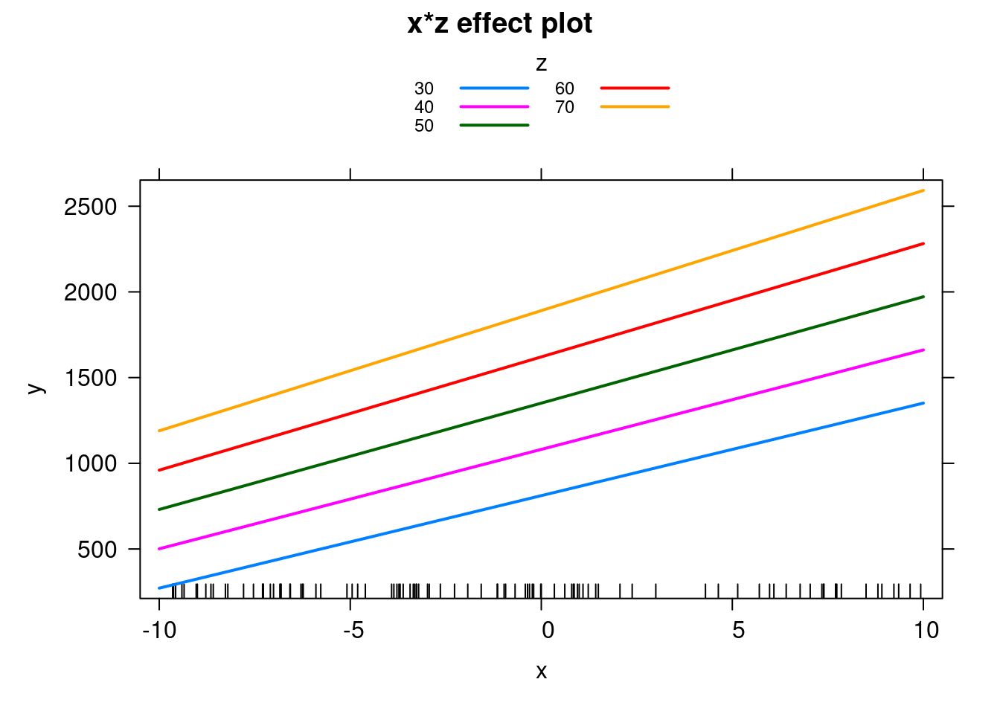
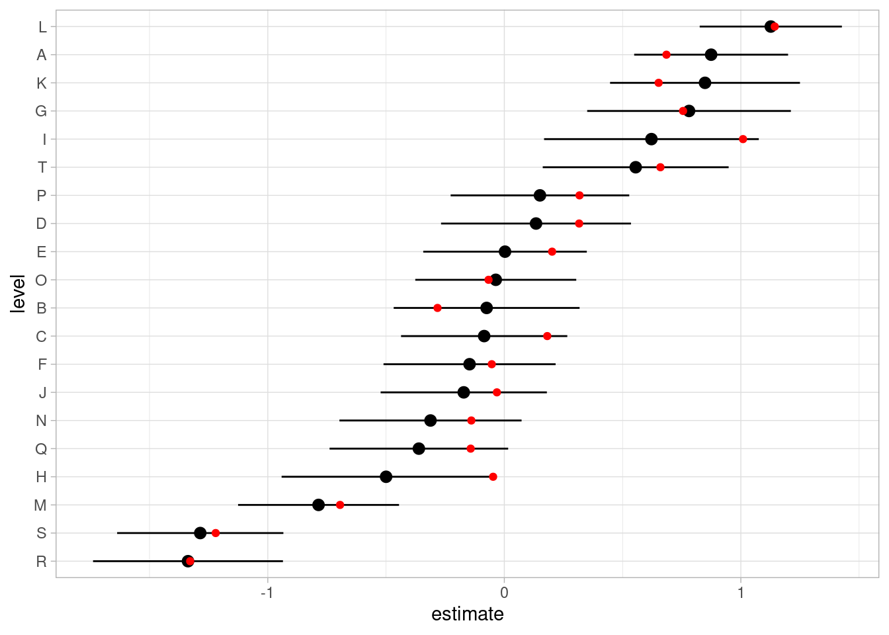

<!DOCTYPE html>
<html xmlns="http://www.w3.org/1999/xhtml" lang="en-US" xml:lang="en-US"><head>

<meta charset="utf-8">
<meta name="generator" content="quarto-1.1.165">

<meta name="viewport" content="width=device-width, initial-scale=1.0, user-scalable=yes">

<meta name="author" content="Phillip Alday">
<meta name="dcterms.date" content="2022-05-06">

<title>Simulation in R</title>
<style>
code{white-space: pre-wrap;}
span.smallcaps{font-variant: small-caps;}
div.columns{display: flex; gap: min(4vw, 1.5em);}
div.column{flex: auto; overflow-x: auto;}
div.hanging-indent{margin-left: 1.5em; text-indent: -1.5em;}
ul.task-list{list-style: none;}
ul.task-list li input[type="checkbox"] {
  width: 0.8em;
  margin: 0 0.8em 0.2em -1.6em;
  vertical-align: middle;
}
pre > code.sourceCode { white-space: pre; position: relative; }
pre > code.sourceCode > span { display: inline-block; line-height: 1.25; }
pre > code.sourceCode > span:empty { height: 1.2em; }
.sourceCode { overflow: visible; }
code.sourceCode > span { color: inherit; text-decoration: inherit; }
div.sourceCode { margin: 1em 0; }
pre.sourceCode { margin: 0; }
@media screen {
div.sourceCode { overflow: auto; }
}
@media print {
pre > code.sourceCode { white-space: pre-wrap; }
pre > code.sourceCode > span { text-indent: -5em; padding-left: 5em; }
}
pre.numberSource code
  { counter-reset: source-line 0; }
pre.numberSource code > span
  { position: relative; left: -4em; counter-increment: source-line; }
pre.numberSource code > span > a:first-child::before
  { content: counter(source-line);
    position: relative; left: -1em; text-align: right; vertical-align: baseline;
    border: none; display: inline-block;
    -webkit-touch-callout: none; -webkit-user-select: none;
    -khtml-user-select: none; -moz-user-select: none;
    -ms-user-select: none; user-select: none;
    padding: 0 4px; width: 4em;
    color: #aaaaaa;
  }
pre.numberSource { margin-left: 3em; border-left: 1px solid #aaaaaa;  padding-left: 4px; }
div.sourceCode
  {   }
@media screen {
pre > code.sourceCode > span > a:first-child::before { text-decoration: underline; }
}
code span.al { color: #ff0000; font-weight: bold; } /* Alert */
code span.an { color: #60a0b0; font-weight: bold; font-style: italic; } /* Annotation */
code span.at { color: #7d9029; } /* Attribute */
code span.bn { color: #40a070; } /* BaseN */
code span.bu { color: #008000; } /* BuiltIn */
code span.cf { color: #007020; font-weight: bold; } /* ControlFlow */
code span.ch { color: #4070a0; } /* Char */
code span.cn { color: #880000; } /* Constant */
code span.co { color: #60a0b0; font-style: italic; } /* Comment */
code span.cv { color: #60a0b0; font-weight: bold; font-style: italic; } /* CommentVar */
code span.do { color: #ba2121; font-style: italic; } /* Documentation */
code span.dt { color: #902000; } /* DataType */
code span.dv { color: #40a070; } /* DecVal */
code span.er { color: #ff0000; font-weight: bold; } /* Error */
code span.ex { } /* Extension */
code span.fl { color: #40a070; } /* Float */
code span.fu { color: #06287e; } /* Function */
code span.im { color: #008000; font-weight: bold; } /* Import */
code span.in { color: #60a0b0; font-weight: bold; font-style: italic; } /* Information */
code span.kw { color: #007020; font-weight: bold; } /* Keyword */
code span.op { color: #666666; } /* Operator */
code span.ot { color: #007020; } /* Other */
code span.pp { color: #bc7a00; } /* Preprocessor */
code span.sc { color: #4070a0; } /* SpecialChar */
code span.ss { color: #bb6688; } /* SpecialString */
code span.st { color: #4070a0; } /* String */
code span.va { color: #19177c; } /* Variable */
code span.vs { color: #4070a0; } /* VerbatimString */
code span.wa { color: #60a0b0; font-weight: bold; font-style: italic; } /* Warning */
</style>


<script src="site_libs/quarto-nav/quarto-nav.js"></script>
<script src="site_libs/quarto-nav/headroom.min.js"></script>
<script src="site_libs/clipboard/clipboard.min.js"></script>
<script src="site_libs/quarto-search/autocomplete.umd.js"></script>
<script src="site_libs/quarto-search/fuse.min.js"></script>
<script src="site_libs/quarto-search/quarto-search.js"></script>
<meta name="quarto:offset" content="./">
<script src="site_libs/quarto-html/quarto.js"></script>
<script src="site_libs/quarto-html/popper.min.js"></script>
<script src="site_libs/quarto-html/tippy.umd.min.js"></script>
<script src="site_libs/quarto-html/anchor.min.js"></script>
<link href="site_libs/quarto-html/tippy.css" rel="stylesheet">
<link href="site_libs/quarto-html/quarto-syntax-highlighting.css" rel="stylesheet" id="quarto-text-highlighting-styles">
<script src="site_libs/bootstrap/bootstrap.min.js"></script>
<link href="site_libs/bootstrap/bootstrap-icons.css" rel="stylesheet">
<link href="site_libs/bootstrap/bootstrap.min.css" rel="stylesheet" id="quarto-bootstrap" data-mode="light">
<script id="quarto-search-options" type="application/json">{
  "location": "navbar",
  "copy-button": false,
  "collapse-after": 3,
  "panel-placement": "end",
  "type": "overlay",
  "limit": 20,
  "language": {
    "search-no-results-text": "No results",
    "search-matching-documents-text": "matching documents",
    "search-copy-link-title": "Copy link to search",
    "search-hide-matches-text": "Hide additional matches",
    "search-more-match-text": "more match in this document",
    "search-more-matches-text": "more matches in this document",
    "search-clear-button-title": "Clear",
    "search-detached-cancel-button-title": "Cancel",
    "search-submit-button-title": "Submit"
  }
}</script>

  <script src="https://cdn.jsdelivr.net/npm/mathjax@3/es5/tex-chtml-full.js" type="text/javascript"></script>

</head>

<body class="nav-sidebar floating nav-fixed">

<div id="quarto-search-results"></div>
  <header id="quarto-header" class="headroom fixed-top">
    <nav class="navbar navbar-expand-lg navbar-dark ">
      <div class="navbar-container container-fluid">
          <button class="navbar-toggler" type="button" data-bs-toggle="collapse" data-bs-target="#navbarCollapse" aria-controls="navbarCollapse" aria-expanded="false" aria-label="Toggle navigation" onclick="if (window.quartoToggleHeadroom) { window.quartoToggleHeadroom(); }">
  <span class="navbar-toggler-icon"></span>
</button>
          <div class="collapse navbar-collapse" id="navbarCollapse">
            <ul class="navbar-nav navbar-nav-scroll me-auto">
  <li class="nav-item">
    <a class="nav-link" href="./index.html">Home</a>
  </li>  
  <li class="nav-item">
    <a class="nav-link" href="./01-introduction.html">Introduction to Simulation</a>
  </li>  
  <li class="nav-item">
    <a class="nav-link active" href="./02-simulation-in-R.html" aria-current="page">Simulation in R</a>
  </li>  
  <li class="nav-item">
    <a class="nav-link" href="./03-simulation-and-the-bootstrap-in-Julia.html">Simulation in Julia</a>
  </li>  
</ul>
              <div id="quarto-search" class="" title="Search"></div>
          </div> <!-- /navcollapse -->
      </div> <!-- /container-fluid -->
    </nav>
  <nav class="quarto-secondary-nav" data-bs-toggle="collapse" data-bs-target="#quarto-sidebar" aria-controls="quarto-sidebar" aria-expanded="false" aria-label="Toggle sidebar navigation" onclick="if (window.quartoToggleHeadroom) { window.quartoToggleHeadroom(); }">
    <div class="container-fluid d-flex justify-content-between">
      <h1 class="quarto-secondary-nav-title">Simulation in R</h1>
      <button type="button" class="quarto-btn-toggle btn" aria-label="Show secondary navigation">
        <i class="bi bi-chevron-right"></i>
      </button>
    </div>
  </nav>
</header>
<!-- content -->
<div id="quarto-content" class="quarto-container page-columns page-rows-contents page-layout-article page-navbar">
<!-- sidebar -->
  <nav id="quarto-sidebar" class="sidebar collapse sidebar-navigation floating overflow-auto">
</nav>
<!-- margin-sidebar -->
    <div id="quarto-margin-sidebar" class="sidebar margin-sidebar">
        <nav id="TOC" role="doc-toc" class="toc-active">
    <h2 id="toc-title">On this page</h2>
   
  <ul>
  <li><a href="#from-math-to-code" id="toc-from-math-to-code" class="nav-link active" data-scroll-target="#from-math-to-code">From math to code</a>
  <ul>
  <li><a href="#recall.." id="toc-recall.." class="nav-link" data-scroll-target="#recall..">Recall…..</a></li>
  <li><a href="#simple-linear-regression" id="toc-simple-linear-regression" class="nav-link" data-scroll-target="#simple-linear-regression">Simple Linear Regression</a></li>
  <li><a href="#multiple-linear-regression" id="toc-multiple-linear-regression" class="nav-link" data-scroll-target="#multiple-linear-regression">Multiple Linear Regression</a></li>
  <li><a href="#not-quite-contrast-coding-but-the-same-problem" id="toc-not-quite-contrast-coding-but-the-same-problem" class="nav-link" data-scroll-target="#not-quite-contrast-coding-but-the-same-problem">Not quite contrast coding, but the same problem</a></li>
  <li><a href="#effects-plots-are-your-friend-i" id="toc-effects-plots-are-your-friend-i" class="nav-link" data-scroll-target="#effects-plots-are-your-friend-i">Effects plots are your friend I</a></li>
  <li><a href="#effects-plots-are-your-friend-ii" id="toc-effects-plots-are-your-friend-ii" class="nav-link" data-scroll-target="#effects-plots-are-your-friend-ii">Effects plots are your friend II</a></li>
  <li><a href="#centering-scaling-and-contrast-coding-in-linear-regression" id="toc-centering-scaling-and-contrast-coding-in-linear-regression" class="nav-link" data-scroll-target="#centering-scaling-and-contrast-coding-in-linear-regression">Centering, scaling and contrast coding in linear regression</a></li>
  <li><a href="#doing-this-in-julia" id="toc-doing-this-in-julia" class="nav-link" data-scroll-target="#doing-this-in-julia">Doing this in Julia</a></li>
  </ul></li>
  <li><a href="#the-real-world" id="toc-the-real-world" class="nav-link" data-scroll-target="#the-real-world">The Real World</a>
  <ul>
  <li><a href="#imbalance" id="toc-imbalance" class="nav-link" data-scroll-target="#imbalance">Imbalance</a></li>
  <li><a href="#heavy-tails" id="toc-heavy-tails" class="nav-link" data-scroll-target="#heavy-tails">Heavy Tails</a></li>
  <li><a href="#outliers" id="toc-outliers" class="nav-link" data-scroll-target="#outliers">Outliers</a></li>
  </ul></li>
  <li><a href="#mixed-models" id="toc-mixed-models" class="nav-link" data-scroll-target="#mixed-models">Mixed Models</a>
  <ul>
  <li><a href="#recall." id="toc-recall." class="nav-link" data-scroll-target="#recall.">Recall….</a></li>
  <li><a href="#a-basic-example" id="toc-a-basic-example" class="nav-link" data-scroll-target="#a-basic-example">A basic example</a></li>
  <li><a href="#check-to-make-sure-that-we-recover-the-blups" id="toc-check-to-make-sure-that-we-recover-the-blups" class="nav-link" data-scroll-target="#check-to-make-sure-that-we-recover-the-blups">Check to make sure that we recover the BLUPs</a></li>
  <li><a href="#complexity-explodes-when-doing-this-by-hand" id="toc-complexity-explodes-when-doing-this-by-hand" class="nav-link" data-scroll-target="#complexity-explodes-when-doing-this-by-hand">Complexity explodes when doing this by hand</a></li>
  <li><a href="#let-lme4-do-the-hard-work-for-you" id="toc-let-lme4-do-the-hard-work-for-you" class="nav-link" data-scroll-target="#let-lme4-do-the-hard-work-for-you">Let lme4 do the hard work for you</a></li>
  <li><a href="#simr-fixef-i" id="toc-simr-fixef-i" class="nav-link" data-scroll-target="#simr-fixef-i">simr fixef I</a></li>
  <li><a href="#simr-fixef-ii" id="toc-simr-fixef-ii" class="nav-link" data-scroll-target="#simr-fixef-ii">simr fixef II</a></li>
  <li><a href="#simr-sig" id="toc-simr-sig" class="nav-link" data-scroll-target="#simr-sig">simr sig</a></li>
  <li><a href="#varcorr-the-variance-covariance-of-the-random-effects" id="toc-varcorr-the-variance-covariance-of-the-random-effects" class="nav-link" data-scroll-target="#varcorr-the-variance-covariance-of-the-random-effects">VarCorr: the variance-covariance of the random effects</a></li>
  <li><a href="#simr-random-effects-i" id="toc-simr-random-effects-i" class="nav-link" data-scroll-target="#simr-random-effects-i">simr random effects I</a></li>
  <li><a href="#simr-random-effects-ii" id="toc-simr-random-effects-ii" class="nav-link" data-scroll-target="#simr-random-effects-ii">simr random effects II</a></li>
  <li><a href="#simr-also-provides-a-way-to-do-this-directly." id="toc-simr-also-provides-a-way-to-do-this-directly." class="nav-link" data-scroll-target="#simr-also-provides-a-way-to-do-this-directly.">simr also provides a way to do this directly….</a></li>
  <li><a href="#did-it-work" id="toc-did-it-work" class="nav-link" data-scroll-target="#did-it-work">Did it work???</a></li>
  <li><a href="#what-about-when-we-have-more-complex-data" id="toc-what-about-when-we-have-more-complex-data" class="nav-link" data-scroll-target="#what-about-when-we-have-more-complex-data">What about when we have more complex data?</a></li>
  <li><a href="#create-the-ground-truth" id="toc-create-the-ground-truth" class="nav-link" data-scroll-target="#create-the-ground-truth">Create the ground truth</a></li>
  <li><a href="#simulate-some-data" id="toc-simulate-some-data" class="nav-link" data-scroll-target="#simulate-some-data">Simulate some data</a></li>
  <li><a href="#fitting-the-true-model" id="toc-fitting-the-true-model" class="nav-link" data-scroll-target="#fitting-the-true-model">Fitting the True Model</a></li>
  <li><a href="#fitting-a-reduced-model" id="toc-fitting-a-reduced-model" class="nav-link" data-scroll-target="#fitting-a-reduced-model">Fitting a Reduced Model</a></li>
  <li><a href="#even-the-reduced-model-is-too-complex-for-the-amount-of-information-we-have" id="toc-even-the-reduced-model-is-too-complex-for-the-amount-of-information-we-have" class="nav-link" data-scroll-target="#even-the-reduced-model-is-too-complex-for-the-amount-of-information-we-have">Even the reduced model is too complex for the amount of information we have!</a></li>
  <li><a href="#cant-do-it-just-once-." id="toc-cant-do-it-just-once-." class="nav-link" data-scroll-target="#cant-do-it-just-once-.">Can’t do it just once ….</a></li>
  </ul></li>
  </ul>
<div class="toc-actions"><div><i class="bi bi-github"></i></div><div class="action-links"><p><a href="https://github.com/palday/freiburg2022/edit/main/02-simulation-in-R.qmd" class="toc-action">Edit this page</a></p><p><a href="https://github.com/palday/freiburg2022/issues/new" class="toc-action">Report an issue</a></p></div></div></nav>
    </div>
<!-- main -->
<main class="content" id="quarto-document-content">

<header id="title-block-header" class="quarto-title-block default">
<div class="quarto-title">
<h1 class="title d-none d-lg-block">Simulation in R</h1>
<p class="subtitle lead">Finally Getting to Actually Do Simulation</p>
</div>


<div class="quarto-title-meta">

    <div>
    <div class="quarto-title-meta-heading">Author</div>
    <div class="quarto-title-meta-contents">
             <p>Phillip Alday </p>
          </div>
  </div>
    
    <div>
    <div class="quarto-title-meta-heading">Published</div>
    <div class="quarto-title-meta-contents">
      <p class="date">May 6, 2022</p>
    </div>
  </div>
    
  </div>
  

</header>

<section id="from-math-to-code" class="level1">
<h1>From math to code</h1>
<section id="recall.." class="level2">
<h2 class="anchored" data-anchor-id="recall..">Recall…..</h2>
<p><span class="math display">\[Y \sim \mathcal{N}(\mu,\sigma^2)\]</span> <span class="math display">\[\mu = X\beta \]</span></p>
<ul>
<li>tildes/distributions correspond to the <code>r*</code> family of functions (random draws)</li>
<li>everything else is a little bit of matrix math</li>
</ul>
</section>
<section id="simple-linear-regression" class="level2">
<h2 class="anchored" data-anchor-id="simple-linear-regression">Simple Linear Regression</h2>
<div class="cell">
<div class="sourceCode cell-code" id="cb1"><pre class="sourceCode r code-with-copy"><code class="sourceCode r"><span id="cb1-1"><a href="#cb1-1" aria-hidden="true" tabindex="-1"></a><span class="fu">library</span>(<span class="st">"groundhog"</span>)</span></code><button title="Copy to Clipboard" class="code-copy-button"><i class="bi"></i></button></pre></div>
<div class="cell-output cell-output-stderr">
<pre><code>Loaded 'groundhog' (version:2.0.1) using R-4.2.0</code></pre>
</div>
<div class="cell-output cell-output-stderr">
<pre><code>Tips and troubleshooting: https://groundhogR.com</code></pre>
</div>
<div class="sourceCode cell-code" id="cb4"><pre class="sourceCode r code-with-copy"><code class="sourceCode r"><span id="cb4-1"><a href="#cb4-1" aria-hidden="true" tabindex="-1"></a><span class="fu">set.seed</span>(<span class="dv">42</span>)</span>
<span id="cb4-2"><a href="#cb4-2" aria-hidden="true" tabindex="-1"></a>form <span class="ot">&lt;-</span> y <span class="sc">~</span> <span class="dv">1</span> <span class="sc">+</span> x</span>
<span id="cb4-3"><a href="#cb4-3" aria-hidden="true" tabindex="-1"></a>beta <span class="ot">&lt;-</span> <span class="fu">c</span>(<span class="dv">1</span>, <span class="dv">42</span>)</span>
<span id="cb4-4"><a href="#cb4-4" aria-hidden="true" tabindex="-1"></a>sig <span class="ot">&lt;-</span> <span class="fl">3.14</span></span>
<span id="cb4-5"><a href="#cb4-5" aria-hidden="true" tabindex="-1"></a>n <span class="ot">&lt;-</span> <span class="dv">100</span></span>
<span id="cb4-6"><a href="#cb4-6" aria-hidden="true" tabindex="-1"></a></span>
<span id="cb4-7"><a href="#cb4-7" aria-hidden="true" tabindex="-1"></a><span class="co"># we can start with mean zero and then add mu in later</span></span>
<span id="cb4-8"><a href="#cb4-8" aria-hidden="true" tabindex="-1"></a>dat <span class="ot">&lt;-</span> <span class="fu">data.frame</span>(<span class="at">y=</span><span class="fu">rnorm</span>(n, <span class="at">sd=</span>sig),</span>
<span id="cb4-9"><a href="#cb4-9" aria-hidden="true" tabindex="-1"></a>                  <span class="at">x=</span><span class="fu">runif</span>(n, <span class="sc">-</span><span class="dv">10</span>, <span class="dv">10</span>)  <span class="co"># NB: uniform</span></span>
<span id="cb4-10"><a href="#cb4-10" aria-hidden="true" tabindex="-1"></a>                  )</span>
<span id="cb4-11"><a href="#cb4-11" aria-hidden="true" tabindex="-1"></a></span>
<span id="cb4-12"><a href="#cb4-12" aria-hidden="true" tabindex="-1"></a>X <span class="ot">&lt;-</span> <span class="fu">model.matrix</span>(form, dat)</span>
<span id="cb4-13"><a href="#cb4-13" aria-hidden="true" tabindex="-1"></a></span>
<span id="cb4-14"><a href="#cb4-14" aria-hidden="true" tabindex="-1"></a>dat<span class="sc">$</span>y <span class="ot">&lt;-</span> X <span class="sc">%*%</span> beta <span class="sc">+</span> dat<span class="sc">$</span>y</span>
<span id="cb4-15"><a href="#cb4-15" aria-hidden="true" tabindex="-1"></a><span class="fu">summary</span>(<span class="fu">lm</span>(form, dat))</span></code><button title="Copy to Clipboard" class="code-copy-button"><i class="bi"></i></button></pre></div>
<div class="cell-output cell-output-stdout">
<pre><code>
Call:
lm(formula = form, data = dat)

Residuals:
    Min      1Q  Median      3Q     Max 
-9.6190 -2.0023  0.4292  2.1287  6.8879 

Coefficients:
            Estimate Std. Error t value Pr(&gt;|t|)    
(Intercept)  1.15594    0.33461   3.455 0.000816 ***
x           42.04546    0.05749 731.355  &lt; 2e-16 ***
---
Signif. codes:  0 '***' 0.001 '**' 0.01 '*' 0.05 '.' 0.1 ' ' 1

Residual standard error: 3.276 on 98 degrees of freedom
Multiple R-squared:  0.9998,    Adjusted R-squared:  0.9998 
F-statistic: 5.349e+05 on 1 and 98 DF,  p-value: &lt; 2.2e-16</code></pre>
</div>
</div>
</section>
<section id="multiple-linear-regression" class="level2">
<h2 class="anchored" data-anchor-id="multiple-linear-regression">Multiple Linear Regression</h2>
<div class="cell">
<div class="sourceCode cell-code" id="cb6"><pre class="sourceCode r code-with-copy"><code class="sourceCode r"><span id="cb6-1"><a href="#cb6-1" aria-hidden="true" tabindex="-1"></a><span class="fu">set.seed</span>(<span class="dv">42</span>)</span>
<span id="cb6-2"><a href="#cb6-2" aria-hidden="true" tabindex="-1"></a>form <span class="ot">&lt;-</span> y <span class="sc">~</span> <span class="dv">1</span> <span class="sc">+</span> x <span class="sc">*</span> z</span>
<span id="cb6-3"><a href="#cb6-3" aria-hidden="true" tabindex="-1"></a><span class="co"># intercept, x, z, x:z</span></span>
<span id="cb6-4"><a href="#cb6-4" aria-hidden="true" tabindex="-1"></a>beta <span class="ot">&lt;-</span> <span class="fu">c</span>(<span class="dv">1</span>, <span class="dv">42</span>, <span class="dv">27</span>, <span class="fl">0.4</span>)</span>
<span id="cb6-5"><a href="#cb6-5" aria-hidden="true" tabindex="-1"></a>sig <span class="ot">&lt;-</span> <span class="fl">3.14</span></span>
<span id="cb6-6"><a href="#cb6-6" aria-hidden="true" tabindex="-1"></a>n <span class="ot">&lt;-</span> <span class="dv">100</span></span>
<span id="cb6-7"><a href="#cb6-7" aria-hidden="true" tabindex="-1"></a></span>
<span id="cb6-8"><a href="#cb6-8" aria-hidden="true" tabindex="-1"></a><span class="co"># we can start with mean zero and then add mu in later</span></span>
<span id="cb6-9"><a href="#cb6-9" aria-hidden="true" tabindex="-1"></a>dat <span class="ot">&lt;-</span> <span class="fu">data.frame</span>(<span class="at">y=</span><span class="fu">rnorm</span>(n, <span class="at">sd=</span>sig),</span>
<span id="cb6-10"><a href="#cb6-10" aria-hidden="true" tabindex="-1"></a>                  <span class="at">x=</span><span class="fu">runif</span>(n, <span class="sc">-</span><span class="dv">10</span>, <span class="dv">10</span>),  <span class="co"># NB: uniform</span></span>
<span id="cb6-11"><a href="#cb6-11" aria-hidden="true" tabindex="-1"></a>                  <span class="at">z=</span><span class="fu">runif</span>(n, <span class="dv">25</span>, <span class="dv">75</span>))</span>
<span id="cb6-12"><a href="#cb6-12" aria-hidden="true" tabindex="-1"></a></span>
<span id="cb6-13"><a href="#cb6-13" aria-hidden="true" tabindex="-1"></a>X <span class="ot">&lt;-</span> <span class="fu">model.matrix</span>(form, dat)</span>
<span id="cb6-14"><a href="#cb6-14" aria-hidden="true" tabindex="-1"></a></span>
<span id="cb6-15"><a href="#cb6-15" aria-hidden="true" tabindex="-1"></a>dat<span class="sc">$</span>y <span class="ot">&lt;-</span> X <span class="sc">%*%</span> beta <span class="sc">+</span> dat<span class="sc">$</span>y</span>
<span id="cb6-16"><a href="#cb6-16" aria-hidden="true" tabindex="-1"></a>m2 <span class="ot">&lt;-</span> <span class="fu">lm</span>(form, dat)</span>
<span id="cb6-17"><a href="#cb6-17" aria-hidden="true" tabindex="-1"></a><span class="fu">summary</span>(m2)</span></code><button title="Copy to Clipboard" class="code-copy-button"><i class="bi"></i></button></pre></div>
<div class="cell-output cell-output-stdout">
<pre><code>
Call:
lm(formula = form, data = dat)

Residuals:
    Min      1Q  Median      3Q     Max 
-9.5903 -1.8976  0.5459  2.2200  7.0766 

Coefficients:
             Estimate Std. Error  t value Pr(&gt;|t|)    
(Intercept)  1.975166   1.202758    1.642    0.104    
x           41.869442   0.218333  191.768   &lt;2e-16 ***
z           26.983065   0.022726 1187.342   &lt;2e-16 ***
x:z          0.403483   0.004046   99.728   &lt;2e-16 ***
---
Signif. codes:  0 '***' 0.001 '**' 0.01 '*' 0.05 '.' 0.1 ' ' 1

Residual standard error: 3.283 on 96 degrees of freedom
Multiple R-squared:      1, Adjusted R-squared:      1 
F-statistic: 9.614e+05 on 3 and 96 DF,  p-value: &lt; 2.2e-16</code></pre>
</div>
</div>
</section>
<section id="not-quite-contrast-coding-but-the-same-problem" class="level2">
<h2 class="anchored" data-anchor-id="not-quite-contrast-coding-but-the-same-problem">Not quite contrast coding, but the same problem</h2>
<div class="cell">
<div class="sourceCode cell-code" id="cb8"><pre class="sourceCode r code-with-copy"><code class="sourceCode r"><span id="cb8-1"><a href="#cb8-1" aria-hidden="true" tabindex="-1"></a><span class="fu">set.seed</span>(<span class="dv">42</span>)</span>
<span id="cb8-2"><a href="#cb8-2" aria-hidden="true" tabindex="-1"></a>form <span class="ot">&lt;-</span> y <span class="sc">~</span> <span class="dv">1</span> <span class="sc">+</span> x <span class="sc">*</span> z</span>
<span id="cb8-3"><a href="#cb8-3" aria-hidden="true" tabindex="-1"></a><span class="co"># intercept, x, z, x:z</span></span>
<span id="cb8-4"><a href="#cb8-4" aria-hidden="true" tabindex="-1"></a>beta <span class="ot">&lt;-</span> <span class="fu">c</span>(<span class="dv">1</span>, <span class="dv">42</span>, <span class="dv">27</span>, <span class="fl">0.4</span>)</span>
<span id="cb8-5"><a href="#cb8-5" aria-hidden="true" tabindex="-1"></a>sig <span class="ot">&lt;-</span> <span class="fl">3.14</span></span>
<span id="cb8-6"><a href="#cb8-6" aria-hidden="true" tabindex="-1"></a>n <span class="ot">&lt;-</span> <span class="dv">100</span></span>
<span id="cb8-7"><a href="#cb8-7" aria-hidden="true" tabindex="-1"></a></span>
<span id="cb8-8"><a href="#cb8-8" aria-hidden="true" tabindex="-1"></a><span class="co"># we can start with mean zero and then add mu in later</span></span>
<span id="cb8-9"><a href="#cb8-9" aria-hidden="true" tabindex="-1"></a>dat <span class="ot">&lt;-</span> <span class="fu">data.frame</span>(<span class="at">y=</span><span class="fu">rnorm</span>(n, <span class="at">sd=</span>sig),</span>
<span id="cb8-10"><a href="#cb8-10" aria-hidden="true" tabindex="-1"></a>                  <span class="at">x=</span><span class="fu">runif</span>(n, <span class="sc">-</span><span class="dv">10</span>, <span class="dv">10</span>),  <span class="co"># NB: uniform</span></span>
<span id="cb8-11"><a href="#cb8-11" aria-hidden="true" tabindex="-1"></a>                  <span class="at">z=</span><span class="fu">runif</span>(n, <span class="dv">25</span>, <span class="dv">75</span>))</span>
<span id="cb8-12"><a href="#cb8-12" aria-hidden="true" tabindex="-1"></a></span>
<span id="cb8-13"><a href="#cb8-13" aria-hidden="true" tabindex="-1"></a>X <span class="ot">&lt;-</span> <span class="fu">model.matrix</span>(form, dat)</span>
<span id="cb8-14"><a href="#cb8-14" aria-hidden="true" tabindex="-1"></a></span>
<span id="cb8-15"><a href="#cb8-15" aria-hidden="true" tabindex="-1"></a>dat<span class="sc">$</span>y <span class="ot">&lt;-</span> X <span class="sc">%*%</span> beta <span class="sc">+</span> dat<span class="sc">$</span>y</span>
<span id="cb8-16"><a href="#cb8-16" aria-hidden="true" tabindex="-1"></a>m2c <span class="ot">&lt;-</span> <span class="fu">lm</span>(y <span class="sc">~</span> <span class="dv">1</span> <span class="sc">+</span> x <span class="sc">*</span> <span class="fu">scale</span>(z, <span class="at">center=</span><span class="cn">TRUE</span>, <span class="at">scale=</span><span class="cn">FALSE</span>), dat)</span>
<span id="cb8-17"><a href="#cb8-17" aria-hidden="true" tabindex="-1"></a><span class="fu">summary</span>(m2c)</span></code><button title="Copy to Clipboard" class="code-copy-button"><i class="bi"></i></button></pre></div>
<div class="cell-output cell-output-stdout">
<pre><code>
Call:
lm(formula = y ~ 1 + x * scale(z, center = TRUE, scale = FALSE), 
    data = dat)

Residuals:
    Min      1Q  Median      3Q     Max 
-9.5903 -1.8976  0.5459  2.2200  7.0766 

Coefficients:
                                          Estimate Std. Error t value Pr(&gt;|t|)
(Intercept)                              1.355e+03  3.380e-01 4009.82   &lt;2e-16
x                                        6.211e+01  5.838e-02 1063.82   &lt;2e-16
scale(z, center = TRUE, scale = FALSE)   2.698e+01  2.273e-02 1187.34   &lt;2e-16
x:scale(z, center = TRUE, scale = FALSE) 4.035e-01  4.046e-03   99.73   &lt;2e-16
                                            
(Intercept)                              ***
x                                        ***
scale(z, center = TRUE, scale = FALSE)   ***
x:scale(z, center = TRUE, scale = FALSE) ***
---
Signif. codes:  0 '***' 0.001 '**' 0.01 '*' 0.05 '.' 0.1 ' ' 1

Residual standard error: 3.283 on 96 degrees of freedom
Multiple R-squared:      1, Adjusted R-squared:      1 
F-statistic: 9.614e+05 on 3 and 96 DF,  p-value: &lt; 2.2e-16</code></pre>
</div>
</div>
</section>
<section id="effects-plots-are-your-friend-i" class="level2">
<h2 class="anchored" data-anchor-id="effects-plots-are-your-friend-i">Effects plots are your friend I</h2>
<div class="cell">
<div class="sourceCode cell-code" id="cb10"><pre class="sourceCode r code-with-copy"><code class="sourceCode r"><span id="cb10-1"><a href="#cb10-1" aria-hidden="true" tabindex="-1"></a><span class="fu">groundhog.library</span>(<span class="st">"effects"</span>, <span class="st">"2022-07-14"</span>)</span></code><button title="Copy to Clipboard" class="code-copy-button"><i class="bi"></i></button></pre></div>
<div class="cell-output cell-output-stderr">
<pre><code>Loading required package: carData</code></pre>
</div>
<div class="cell-output cell-output-stderr">
<pre><code>lattice theme set by effectsTheme()
See ?effectsTheme for details.</code></pre>
</div>
<div class="cell-output cell-output-stderr">
<pre><code>Succesfully attached 'effects_4.2-2'</code></pre>
</div>
<div class="sourceCode cell-code" id="cb14"><pre class="sourceCode r code-with-copy"><code class="sourceCode r"><span id="cb14-1"><a href="#cb14-1" aria-hidden="true" tabindex="-1"></a><span class="fu">plot</span>(<span class="fu">allEffects</span>(m2), <span class="at">multiline=</span><span class="cn">TRUE</span>, <span class="at">ci.style=</span><span class="st">"band"</span>)</span></code><button title="Copy to Clipboard" class="code-copy-button"><i class="bi"></i></button></pre></div>
<div class="cell-output cell-output-stderr">
<pre><code>Warning in Analyze.model(focal.predictors, mod, xlevels, default.levels, : the
predictor y is a one-column matrix that was converted to a vector</code></pre>
</div>
<div class="cell-output-display">
<p></p>
</div>
</div>
</section>
<section id="effects-plots-are-your-friend-ii" class="level2">
<h2 class="anchored" data-anchor-id="effects-plots-are-your-friend-ii">Effects plots are your friend II</h2>
<div class="cell">
<div class="sourceCode cell-code" id="cb16"><pre class="sourceCode r code-with-copy"><code class="sourceCode r"><span id="cb16-1"><a href="#cb16-1" aria-hidden="true" tabindex="-1"></a><span class="fu">plot</span>(<span class="fu">allEffects</span>(m2c), <span class="at">multiline=</span><span class="cn">TRUE</span>, <span class="at">ci.style=</span><span class="st">"band"</span>)</span></code><button title="Copy to Clipboard" class="code-copy-button"><i class="bi"></i></button></pre></div>
<div class="cell-output cell-output-stderr">
<pre><code>Warning in Analyze.model(focal.predictors, mod, xlevels, default.levels, : the
predictors y, scale(z, center = TRUE, scale = FALSE) are one-column matrices
that were converted to vectors</code></pre>
</div>
<div class="cell-output-display">
<p></p>
</div>
</div>
</section>
<section id="centering-scaling-and-contrast-coding-in-linear-regression" class="level2">
<h2 class="anchored" data-anchor-id="centering-scaling-and-contrast-coding-in-linear-regression">Centering, scaling and contrast coding in linear regression</h2>
<ul>
<li>Linear transformations of the numeric representation of your predictors changes the meaning and interpretation of your model coefficients</li>
<li>Likewise, the way that categorical variables are changed into contrasts determines the meaning and interpretation of your model coefficients</li>
<li>You cannot understand what a model means without knowing the choice of contrast and any transformation of numeric predictors! (see also Brehm and Alday, JML, in press)</li>
<li>This is just as critical for simulation, if you want to simulate your hypotheses!</li>
</ul>
</section>
<section id="doing-this-in-julia" class="level2">
<h2 class="anchored" data-anchor-id="doing-this-in-julia">Doing this in Julia</h2>
<div class="sourceCode" id="cb18"><pre class="sourceCode julia code-with-copy"><code class="sourceCode julia"><span id="cb18-1"><a href="#cb18-1" aria-hidden="true" tabindex="-1"></a><span class="im">using</span> <span class="bu">DataFrames</span>, <span class="bu">GLM</span>, <span class="bu">StatsModels</span>, <span class="bu">Random</span></span>
<span id="cb18-2"><a href="#cb18-2" aria-hidden="true" tabindex="-1"></a></span>
<span id="cb18-3"><a href="#cb18-3" aria-hidden="true" tabindex="-1"></a>rng <span class="op">=</span> <span class="fu">MersenneTwister</span>(<span class="fl">42</span>);</span>
<span id="cb18-4"><a href="#cb18-4" aria-hidden="true" tabindex="-1"></a>form <span class="op">=</span> <span class="pp">@formula</span>(y <span class="op">~</span> <span class="fl">1</span> <span class="op">+</span> x <span class="op">*</span> z);</span>
<span id="cb18-5"><a href="#cb18-5" aria-hidden="true" tabindex="-1"></a><span class="co"># intercept, x, z, x&amp;z</span></span>
<span id="cb18-6"><a href="#cb18-6" aria-hidden="true" tabindex="-1"></a>beta <span class="op">=</span> [<span class="fl">1</span>, <span class="fl">42</span>, <span class="fl">27</span>, <span class="fl">0.4</span>];</span>
<span id="cb18-7"><a href="#cb18-7" aria-hidden="true" tabindex="-1"></a>sig <span class="op">=</span> <span class="fl">3.14</span>;</span>
<span id="cb18-8"><a href="#cb18-8" aria-hidden="true" tabindex="-1"></a>n <span class="op">=</span> <span class="fl">100</span>;</span>
<span id="cb18-9"><a href="#cb18-9" aria-hidden="true" tabindex="-1"></a></span>
<span id="cb18-10"><a href="#cb18-10" aria-hidden="true" tabindex="-1"></a><span class="co"># we can start with mean zero and then add mu in later</span></span>
<span id="cb18-11"><a href="#cb18-11" aria-hidden="true" tabindex="-1"></a>dat <span class="op">=</span> <span class="fu">DataFrame</span>(y<span class="op">=</span>sig <span class="op">*</span> <span class="fu">randn</span>(rng, n), <span class="co"># multiply by sd to scale</span></span>
<span id="cb18-12"><a href="#cb18-12" aria-hidden="true" tabindex="-1"></a>                x<span class="op">=</span><span class="fl">20</span> <span class="op">*</span> <span class="fu">rand</span>(rng, n) <span class="op">.-</span> <span class="fl">10</span>,  <span class="co"># multiply by range and move left edge to correct postion</span></span>
<span id="cb18-13"><a href="#cb18-13" aria-hidden="true" tabindex="-1"></a>                z<span class="op">=</span><span class="fl">50</span> <span class="op">*</span> <span class="fu">rand</span>(rng, n) <span class="op">.+</span> <span class="fl">25</span>);</span>
<span id="cb18-14"><a href="#cb18-14" aria-hidden="true" tabindex="-1"></a></span>
<span id="cb18-15"><a href="#cb18-15" aria-hidden="true" tabindex="-1"></a><span class="co"># "hints" is the argument contrasts, etc.</span></span>
<span id="cb18-16"><a href="#cb18-16" aria-hidden="true" tabindex="-1"></a>X <span class="op">=</span> <span class="fu">modelmatrix</span>(form, dat);</span>
<span id="cb18-17"><a href="#cb18-17" aria-hidden="true" tabindex="-1"></a></span>
<span id="cb18-18"><a href="#cb18-18" aria-hidden="true" tabindex="-1"></a></span>
<span id="cb18-19"><a href="#cb18-19" aria-hidden="true" tabindex="-1"></a>m2 <span class="op">=</span> <span class="fu">lm</span>(form, dat)</span></code><button title="Copy to Clipboard" class="code-copy-button"><i class="bi"></i></button></pre></div>
</section>
</section>
<section id="the-real-world" class="level1">
<h1>The Real World</h1>
<section id="imbalance" class="level2">
<h2 class="anchored" data-anchor-id="imbalance">Imbalance</h2>
<div class="cell">
<div class="sourceCode cell-code" id="cb19"><pre class="sourceCode r code-with-copy"><code class="sourceCode r"><span id="cb19-1"><a href="#cb19-1" aria-hidden="true" tabindex="-1"></a><span class="fu">groundhog.library</span>(<span class="st">"car"</span>, <span class="st">"2022-07-14"</span>)</span></code><button title="Copy to Clipboard" class="code-copy-button"><i class="bi"></i></button></pre></div>
<div class="cell-output cell-output-stderr">
<pre><code>Succesfully attached 'car_3.1-0'</code></pre>
</div>
<div class="sourceCode cell-code" id="cb21"><pre class="sourceCode r code-with-copy"><code class="sourceCode r"><span id="cb21-1"><a href="#cb21-1" aria-hidden="true" tabindex="-1"></a><span class="fu">set.seed</span>(<span class="dv">42</span>)</span>
<span id="cb21-2"><a href="#cb21-2" aria-hidden="true" tabindex="-1"></a>form <span class="ot">&lt;-</span> y <span class="sc">~</span> <span class="dv">1</span> <span class="sc">+</span> x</span>
<span id="cb21-3"><a href="#cb21-3" aria-hidden="true" tabindex="-1"></a>beta <span class="ot">&lt;-</span> <span class="fu">c</span>(<span class="dv">1</span>, <span class="dv">42</span>, <span class="dv">42</span>)</span>
<span id="cb21-4"><a href="#cb21-4" aria-hidden="true" tabindex="-1"></a>sig <span class="ot">&lt;-</span> <span class="fl">3.14</span></span>
<span id="cb21-5"><a href="#cb21-5" aria-hidden="true" tabindex="-1"></a>n <span class="ot">&lt;-</span> <span class="dv">100</span></span>
<span id="cb21-6"><a href="#cb21-6" aria-hidden="true" tabindex="-1"></a></span>
<span id="cb21-7"><a href="#cb21-7" aria-hidden="true" tabindex="-1"></a><span class="co"># we can start with mean zero and then add mu in later</span></span>
<span id="cb21-8"><a href="#cb21-8" aria-hidden="true" tabindex="-1"></a>dat <span class="ot">&lt;-</span> <span class="fu">data.frame</span>(<span class="at">y=</span><span class="fu">rnorm</span>(n, <span class="at">sd=</span>sig),</span>
<span id="cb21-9"><a href="#cb21-9" aria-hidden="true" tabindex="-1"></a>                  <span class="at">x=</span><span class="fu">sample</span>(<span class="fu">c</span>(<span class="st">"brown"</span>, <span class="st">"green"</span>, <span class="st">"orange"</span>), n, <span class="at">replace=</span><span class="cn">TRUE</span>)  <span class="co"># NB: uniform</span></span>
<span id="cb21-10"><a href="#cb21-10" aria-hidden="true" tabindex="-1"></a>                  )</span>
<span id="cb21-11"><a href="#cb21-11" aria-hidden="true" tabindex="-1"></a>dat<span class="sc">$</span>x <span class="ot">&lt;-</span> <span class="fu">factor</span>(dat<span class="sc">$</span>x)</span>
<span id="cb21-12"><a href="#cb21-12" aria-hidden="true" tabindex="-1"></a><span class="fu">contrasts</span>(dat<span class="sc">$</span>x) <span class="ot">&lt;-</span> <span class="fu">contr.Sum</span>(<span class="fu">levels</span>(dat<span class="sc">$</span>x))</span>
<span id="cb21-13"><a href="#cb21-13" aria-hidden="true" tabindex="-1"></a></span>
<span id="cb21-14"><a href="#cb21-14" aria-hidden="true" tabindex="-1"></a>X <span class="ot">&lt;-</span> <span class="fu">model.matrix</span>(form, dat)</span>
<span id="cb21-15"><a href="#cb21-15" aria-hidden="true" tabindex="-1"></a></span>
<span id="cb21-16"><a href="#cb21-16" aria-hidden="true" tabindex="-1"></a>dat<span class="sc">$</span>y <span class="ot">&lt;-</span> X <span class="sc">%*%</span> beta <span class="sc">+</span> dat<span class="sc">$</span>y</span>
<span id="cb21-17"><a href="#cb21-17" aria-hidden="true" tabindex="-1"></a><span class="fu">summary</span>(<span class="fu">lm</span>(form, dat))</span></code><button title="Copy to Clipboard" class="code-copy-button"><i class="bi"></i></button></pre></div>
<div class="cell-output cell-output-stdout">
<pre><code>
Call:
lm(formula = form, data = dat)

Residuals:
    Min      1Q  Median      3Q     Max 
-9.3230 -2.0847  0.3634  2.0419  6.6855 

Coefficients:
            Estimate Std. Error t value Pr(&gt;|t|)    
(Intercept)   1.0739     0.3305    3.25  0.00159 ** 
x[S.brown]   42.4207     0.4517   93.91  &lt; 2e-16 ***
x[S.green]   41.7285     0.4710   88.60  &lt; 2e-16 ***
---
Signif. codes:  0 '***' 0.001 '**' 0.01 '*' 0.05 '.' 0.1 ' ' 1

Residual standard error: 3.288 on 97 degrees of freedom
Multiple R-squared:  0.9969,    Adjusted R-squared:  0.9968 
F-statistic: 1.548e+04 on 2 and 97 DF,  p-value: &lt; 2.2e-16</code></pre>
</div>
</div>
<div class="cell">
<div class="sourceCode cell-code" id="cb23"><pre class="sourceCode r code-with-copy"><code class="sourceCode r"><span id="cb23-1"><a href="#cb23-1" aria-hidden="true" tabindex="-1"></a><span class="fu">set.seed</span>(<span class="dv">42</span>)</span>
<span id="cb23-2"><a href="#cb23-2" aria-hidden="true" tabindex="-1"></a>form <span class="ot">&lt;-</span> y <span class="sc">~</span> <span class="dv">1</span> <span class="sc">+</span> x</span>
<span id="cb23-3"><a href="#cb23-3" aria-hidden="true" tabindex="-1"></a>beta <span class="ot">&lt;-</span> <span class="fu">c</span>(<span class="dv">1</span>, <span class="dv">42</span>, <span class="dv">42</span>)</span>
<span id="cb23-4"><a href="#cb23-4" aria-hidden="true" tabindex="-1"></a>sig <span class="ot">&lt;-</span> <span class="fl">3.14</span></span>
<span id="cb23-5"><a href="#cb23-5" aria-hidden="true" tabindex="-1"></a>n <span class="ot">&lt;-</span> <span class="dv">100</span></span>
<span id="cb23-6"><a href="#cb23-6" aria-hidden="true" tabindex="-1"></a></span>
<span id="cb23-7"><a href="#cb23-7" aria-hidden="true" tabindex="-1"></a><span class="co"># we can start with mean zero and then add mu in later</span></span>
<span id="cb23-8"><a href="#cb23-8" aria-hidden="true" tabindex="-1"></a>dat <span class="ot">&lt;-</span> <span class="fu">data.frame</span>(<span class="at">y=</span><span class="fu">rnorm</span>(n, <span class="at">sd=</span>sig),</span>
<span id="cb23-9"><a href="#cb23-9" aria-hidden="true" tabindex="-1"></a>                  <span class="at">x=</span><span class="fu">sample</span>(<span class="fu">c</span>(<span class="st">"brown"</span>, <span class="st">"green"</span>, <span class="st">"orange"</span>), n, <span class="at">replace=</span><span class="cn">TRUE</span>, <span class="at">prob=</span><span class="fu">c</span>(<span class="dv">19</span><span class="sc">/</span><span class="dv">30</span>, <span class="dv">1</span><span class="sc">/</span><span class="dv">30</span>, <span class="dv">1</span><span class="sc">/</span><span class="dv">3</span>))  <span class="co"># NB: uniform</span></span>
<span id="cb23-10"><a href="#cb23-10" aria-hidden="true" tabindex="-1"></a>                  )</span>
<span id="cb23-11"><a href="#cb23-11" aria-hidden="true" tabindex="-1"></a>dat<span class="sc">$</span>x <span class="ot">&lt;-</span> <span class="fu">factor</span>(dat<span class="sc">$</span>x)</span>
<span id="cb23-12"><a href="#cb23-12" aria-hidden="true" tabindex="-1"></a><span class="fu">contrasts</span>(dat<span class="sc">$</span>x) <span class="ot">&lt;-</span> <span class="fu">contr.Sum</span>(<span class="fu">levels</span>(dat<span class="sc">$</span>x))</span>
<span id="cb23-13"><a href="#cb23-13" aria-hidden="true" tabindex="-1"></a></span>
<span id="cb23-14"><a href="#cb23-14" aria-hidden="true" tabindex="-1"></a>X <span class="ot">&lt;-</span> <span class="fu">model.matrix</span>(form, dat)</span>
<span id="cb23-15"><a href="#cb23-15" aria-hidden="true" tabindex="-1"></a></span>
<span id="cb23-16"><a href="#cb23-16" aria-hidden="true" tabindex="-1"></a>dat<span class="sc">$</span>y <span class="ot">&lt;-</span> X <span class="sc">%*%</span> beta <span class="sc">+</span> dat<span class="sc">$</span>y</span>
<span id="cb23-17"><a href="#cb23-17" aria-hidden="true" tabindex="-1"></a><span class="fu">summary</span>(<span class="fu">lm</span>(form, dat))</span></code><button title="Copy to Clipboard" class="code-copy-button"><i class="bi"></i></button></pre></div>
<div class="cell-output cell-output-stdout">
<pre><code>
Call:
lm(formula = form, data = dat)

Residuals:
    Min      1Q  Median      3Q     Max 
-9.1533 -2.2243  0.2046  2.2696  6.5829 

Coefficients:
            Estimate Std. Error t value Pr(&gt;|t|)    
(Intercept)   1.9428     0.6780   2.866   0.0051 ** 
x[S.brown]   40.8121     0.7111  57.390   &lt;2e-16 ***
x[S.green]   43.0412     1.2752  33.753   &lt;2e-16 ***
---
Signif. codes:  0 '***' 0.001 '**' 0.01 '*' 0.05 '.' 0.1 ' ' 1

Residual standard error: 3.24 on 97 degrees of freedom
Multiple R-squared:  0.9961,    Adjusted R-squared:  0.996 
F-statistic: 1.23e+04 on 2 and 97 DF,  p-value: &lt; 2.2e-16</code></pre>
</div>
</div>
</section>
<section id="heavy-tails" class="level2">
<h2 class="anchored" data-anchor-id="heavy-tails">Heavy Tails</h2>
<div class="cell">
<div class="sourceCode cell-code" id="cb25"><pre class="sourceCode r code-with-copy"><code class="sourceCode r"><span id="cb25-1"><a href="#cb25-1" aria-hidden="true" tabindex="-1"></a><span class="fu">set.seed</span>(<span class="dv">42</span>)</span>
<span id="cb25-2"><a href="#cb25-2" aria-hidden="true" tabindex="-1"></a>form <span class="ot">&lt;-</span> y <span class="sc">~</span> <span class="dv">1</span> <span class="sc">+</span> x</span>
<span id="cb25-3"><a href="#cb25-3" aria-hidden="true" tabindex="-1"></a>beta <span class="ot">&lt;-</span> <span class="fu">c</span>(<span class="dv">1</span>, <span class="dv">42</span>)</span>
<span id="cb25-4"><a href="#cb25-4" aria-hidden="true" tabindex="-1"></a>sig <span class="ot">&lt;-</span> <span class="fl">3.14</span></span>
<span id="cb25-5"><a href="#cb25-5" aria-hidden="true" tabindex="-1"></a>n <span class="ot">&lt;-</span> <span class="dv">100</span></span>
<span id="cb25-6"><a href="#cb25-6" aria-hidden="true" tabindex="-1"></a></span>
<span id="cb25-7"><a href="#cb25-7" aria-hidden="true" tabindex="-1"></a><span class="co"># we can start with mean zero and then add mu in later</span></span>
<span id="cb25-8"><a href="#cb25-8" aria-hidden="true" tabindex="-1"></a>dat <span class="ot">&lt;-</span> <span class="fu">data.frame</span>(<span class="at">y=</span>sig <span class="sc">*</span> <span class="fu">rt</span>(n, <span class="at">df=</span><span class="dv">3</span>),</span>
<span id="cb25-9"><a href="#cb25-9" aria-hidden="true" tabindex="-1"></a>                  <span class="at">x=</span><span class="fu">runif</span>(n, <span class="sc">-</span><span class="dv">10</span>, <span class="dv">10</span>)  <span class="co"># NB: uniform</span></span>
<span id="cb25-10"><a href="#cb25-10" aria-hidden="true" tabindex="-1"></a>                  )</span>
<span id="cb25-11"><a href="#cb25-11" aria-hidden="true" tabindex="-1"></a></span>
<span id="cb25-12"><a href="#cb25-12" aria-hidden="true" tabindex="-1"></a>X <span class="ot">&lt;-</span> <span class="fu">model.matrix</span>(form, dat)</span>
<span id="cb25-13"><a href="#cb25-13" aria-hidden="true" tabindex="-1"></a></span>
<span id="cb25-14"><a href="#cb25-14" aria-hidden="true" tabindex="-1"></a>dat<span class="sc">$</span>y <span class="ot">&lt;-</span> X <span class="sc">%*%</span> beta <span class="sc">+</span> dat<span class="sc">$</span>y</span>
<span id="cb25-15"><a href="#cb25-15" aria-hidden="true" tabindex="-1"></a><span class="fu">summary</span>(<span class="fu">lm</span>(form, dat))</span></code><button title="Copy to Clipboard" class="code-copy-button"><i class="bi"></i></button></pre></div>
<div class="cell-output cell-output-stdout">
<pre><code>
Call:
lm(formula = form, data = dat)

Residuals:
    Min      1Q  Median      3Q     Max 
-8.4307 -2.6328 -0.8111  1.4640 29.5658 

Coefficients:
            Estimate Std. Error t value Pr(&gt;|t|)    
(Intercept)  1.23958    0.48927   2.534   0.0129 *  
x           41.83358    0.08632 484.656   &lt;2e-16 ***
---
Signif. codes:  0 '***' 0.001 '**' 0.01 '*' 0.05 '.' 0.1 ' ' 1

Residual standard error: 4.89 on 98 degrees of freedom
Multiple R-squared:  0.9996,    Adjusted R-squared:  0.9996 
F-statistic: 2.349e+05 on 1 and 98 DF,  p-value: &lt; 2.2e-16</code></pre>
</div>
</div>
</section>
<section id="outliers" class="level2">
<h2 class="anchored" data-anchor-id="outliers">Outliers</h2>
<div class="cell">
<div class="sourceCode cell-code" id="cb27"><pre class="sourceCode r code-with-copy"><code class="sourceCode r"><span id="cb27-1"><a href="#cb27-1" aria-hidden="true" tabindex="-1"></a><span class="fu">set.seed</span>(<span class="dv">42</span>)</span>
<span id="cb27-2"><a href="#cb27-2" aria-hidden="true" tabindex="-1"></a>form <span class="ot">&lt;-</span> y <span class="sc">~</span> <span class="dv">1</span> <span class="sc">+</span> x</span>
<span id="cb27-3"><a href="#cb27-3" aria-hidden="true" tabindex="-1"></a>beta <span class="ot">&lt;-</span> <span class="fu">c</span>(<span class="dv">1</span>, <span class="dv">42</span>)</span>
<span id="cb27-4"><a href="#cb27-4" aria-hidden="true" tabindex="-1"></a>sig <span class="ot">&lt;-</span> <span class="fl">3.14</span></span>
<span id="cb27-5"><a href="#cb27-5" aria-hidden="true" tabindex="-1"></a>n <span class="ot">&lt;-</span> <span class="dv">100</span></span>
<span id="cb27-6"><a href="#cb27-6" aria-hidden="true" tabindex="-1"></a></span>
<span id="cb27-7"><a href="#cb27-7" aria-hidden="true" tabindex="-1"></a>dat <span class="ot">&lt;-</span> <span class="fu">data.frame</span>(<span class="at">y=</span><span class="fu">rnorm</span>(n, <span class="at">sd=</span>sig),</span>
<span id="cb27-8"><a href="#cb27-8" aria-hidden="true" tabindex="-1"></a>                  <span class="at">x=</span><span class="fu">runif</span>(n, <span class="sc">-</span><span class="dv">10</span>, <span class="dv">10</span>)  <span class="co"># NB: uniform</span></span>
<span id="cb27-9"><a href="#cb27-9" aria-hidden="true" tabindex="-1"></a>                  )</span>
<span id="cb27-10"><a href="#cb27-10" aria-hidden="true" tabindex="-1"></a></span>
<span id="cb27-11"><a href="#cb27-11" aria-hidden="true" tabindex="-1"></a>X <span class="ot">&lt;-</span> <span class="fu">model.matrix</span>(form, dat)</span>
<span id="cb27-12"><a href="#cb27-12" aria-hidden="true" tabindex="-1"></a><span class="co"># in 10% of data points, we add in a potentially huge second source of error</span></span>
<span id="cb27-13"><a href="#cb27-13" aria-hidden="true" tabindex="-1"></a>dat<span class="sc">$</span>y <span class="ot">&lt;-</span> dat<span class="sc">$</span>y <span class="sc">+</span> <span class="fu">rbinom</span>(n, <span class="dv">1</span>, <span class="at">prob=</span><span class="fl">0.1</span>) <span class="sc">*</span> <span class="fu">rnorm</span>(n, <span class="at">sd=</span><span class="dv">100</span><span class="sc">*</span>sig)</span>
<span id="cb27-14"><a href="#cb27-14" aria-hidden="true" tabindex="-1"></a></span>
<span id="cb27-15"><a href="#cb27-15" aria-hidden="true" tabindex="-1"></a>dat<span class="sc">$</span>y <span class="ot">&lt;-</span> X <span class="sc">%*%</span> beta <span class="sc">+</span> dat<span class="sc">$</span>y</span>
<span id="cb27-16"><a href="#cb27-16" aria-hidden="true" tabindex="-1"></a><span class="fu">summary</span>(<span class="fu">lm</span>(form, dat))</span></code><button title="Copy to Clipboard" class="code-copy-button"><i class="bi"></i></button></pre></div>
<div class="cell-output cell-output-stdout">
<pre><code>
Call:
lm(formula = form, data = dat)

Residuals:
    Min      1Q  Median      3Q     Max 
-541.35  -13.20    0.63   13.58  664.77 

Coefficients:
            Estimate Std. Error t value Pr(&gt;|t|)    
(Intercept)   -8.038     12.774  -0.629    0.531    
x             39.016      2.195  17.778   &lt;2e-16 ***
---
Signif. codes:  0 '***' 0.001 '**' 0.01 '*' 0.05 '.' 0.1 ' ' 1

Residual standard error: 125.1 on 98 degrees of freedom
Multiple R-squared:  0.7633,    Adjusted R-squared:  0.7609 
F-statistic:   316 on 1 and 98 DF,  p-value: &lt; 2.2e-16</code></pre>
</div>
</div>
</section>
</section>
<section id="mixed-models" class="level1">
<h1>Mixed Models</h1>
<section id="recall." class="level2">
<h2 class="anchored" data-anchor-id="recall.">Recall….</h2>
<p><span class="math display">\[\begin{align*}
(Y | B = b ) &amp;\sim \mathcal{N}( X\beta + Zb, \sigma^2 I ) \\
  B &amp;\sim \mathcal{N}(0, \sigma _\theta)
\end{align*}\]</span></p>
<ul>
<li>tildes/distributions correspond to the <code>r*</code> family of functions (random draws)</li>
<li>everything else is a little bit of matrix math</li>
</ul>
</section>
<section id="a-basic-example" class="level2">
<h2 class="anchored" data-anchor-id="a-basic-example">A basic example</h2>
<div class="cell">
<div class="sourceCode cell-code" id="cb29"><pre class="sourceCode r code-with-copy"><code class="sourceCode r"><span id="cb29-1"><a href="#cb29-1" aria-hidden="true" tabindex="-1"></a><span class="fu">set.seed</span>(<span class="dv">42</span>)</span>
<span id="cb29-2"><a href="#cb29-2" aria-hidden="true" tabindex="-1"></a><span class="fu">groundhog.library</span>(<span class="st">"lme4"</span>, <span class="st">"2022-07-14"</span>)</span></code><button title="Copy to Clipboard" class="code-copy-button"><i class="bi"></i></button></pre></div>
<div class="cell-output cell-output-stderr">
<pre><code>Loading required package: Matrix</code></pre>
</div>
<div class="cell-output cell-output-stderr">
<pre><code>Succesfully attached 'lme4_1.1-30'</code></pre>
</div>
<div class="sourceCode cell-code" id="cb32"><pre class="sourceCode r code-with-copy"><code class="sourceCode r"><span id="cb32-1"><a href="#cb32-1" aria-hidden="true" tabindex="-1"></a>form_fe <span class="ot">&lt;-</span> y <span class="sc">~</span> <span class="dv">1</span> <span class="sc">+</span> x</span>
<span id="cb32-2"><a href="#cb32-2" aria-hidden="true" tabindex="-1"></a>form <span class="ot">&lt;-</span> y <span class="sc">~</span> <span class="dv">1</span> <span class="sc">+</span> x <span class="sc">+</span> (<span class="dv">1</span> <span class="sc">|</span> subj)</span>
<span id="cb32-3"><a href="#cb32-3" aria-hidden="true" tabindex="-1"></a></span>
<span id="cb32-4"><a href="#cb32-4" aria-hidden="true" tabindex="-1"></a>beta <span class="ot">&lt;-</span> <span class="fu">c</span>(<span class="dv">1</span>, <span class="dv">42</span>)</span>
<span id="cb32-5"><a href="#cb32-5" aria-hidden="true" tabindex="-1"></a>sig <span class="ot">&lt;-</span> <span class="dv">1</span> <span class="co"># try 3.14</span></span>
<span id="cb32-6"><a href="#cb32-6" aria-hidden="true" tabindex="-1"></a>n <span class="ot">&lt;-</span> <span class="dv">500</span> <span class="co"># try 100, 200, 500, 1000</span></span>
<span id="cb32-7"><a href="#cb32-7" aria-hidden="true" tabindex="-1"></a>n_subj <span class="ot">&lt;-</span> <span class="dv">20</span> <span class="co"># try 10, 15, can't be more than 26</span></span>
<span id="cb32-8"><a href="#cb32-8" aria-hidden="true" tabindex="-1"></a><span class="co"># was it better to increase n or n_subj?</span></span>
<span id="cb32-9"><a href="#cb32-9" aria-hidden="true" tabindex="-1"></a>subj_sd <span class="ot">&lt;-</span> <span class="fl">0.5</span></span>
<span id="cb32-10"><a href="#cb32-10" aria-hidden="true" tabindex="-1"></a>b <span class="ot">&lt;-</span> <span class="fu">rnorm</span>(n_subj, <span class="at">sd=</span>subj_sd)</span>
<span id="cb32-11"><a href="#cb32-11" aria-hidden="true" tabindex="-1"></a></span>
<span id="cb32-12"><a href="#cb32-12" aria-hidden="true" tabindex="-1"></a>dat <span class="ot">&lt;-</span> <span class="fu">data.frame</span>(<span class="at">y=</span><span class="fu">rnorm</span>(n, <span class="at">sd=</span>sig),</span>
<span id="cb32-13"><a href="#cb32-13" aria-hidden="true" tabindex="-1"></a>                  <span class="at">x=</span><span class="fu">runif</span>(n, <span class="sc">-</span><span class="dv">10</span>, <span class="dv">10</span>),</span>
<span id="cb32-14"><a href="#cb32-14" aria-hidden="true" tabindex="-1"></a>                  <span class="at">subj=</span><span class="fu">sample</span>(LETTERS[<span class="dv">1</span><span class="sc">:</span>n_subj], n, <span class="at">replace=</span><span class="cn">TRUE</span>))</span>
<span id="cb32-15"><a href="#cb32-15" aria-hidden="true" tabindex="-1"></a></span>
<span id="cb32-16"><a href="#cb32-16" aria-hidden="true" tabindex="-1"></a>X <span class="ot">&lt;-</span> <span class="fu">model.matrix</span>(form_fe, dat)</span>
<span id="cb32-17"><a href="#cb32-17" aria-hidden="true" tabindex="-1"></a>Z <span class="ot">&lt;-</span> <span class="fu">model.matrix</span>(<span class="sc">~</span> <span class="dv">0</span> <span class="sc">+</span> subj, dat)</span>
<span id="cb32-18"><a href="#cb32-18" aria-hidden="true" tabindex="-1"></a></span>
<span id="cb32-19"><a href="#cb32-19" aria-hidden="true" tabindex="-1"></a>dat<span class="sc">$</span>y <span class="ot">&lt;-</span> X <span class="sc">%*%</span> beta <span class="sc">+</span> Z <span class="sc">%*%</span> b <span class="sc">+</span> dat<span class="sc">$</span>y</span>
<span id="cb32-20"><a href="#cb32-20" aria-hidden="true" tabindex="-1"></a><span class="co"># what happens if you use y ~ 1 + x + (1 + x | subj)?</span></span>
<span id="cb32-21"><a href="#cb32-21" aria-hidden="true" tabindex="-1"></a>mm1 <span class="ot">&lt;-</span> <span class="fu">lmer</span>(form, dat, <span class="at">REML=</span><span class="cn">FALSE</span>)</span>
<span id="cb32-22"><a href="#cb32-22" aria-hidden="true" tabindex="-1"></a><span class="fu">summary</span>(mm1)</span></code><button title="Copy to Clipboard" class="code-copy-button"><i class="bi"></i></button></pre></div>
<div class="cell-output cell-output-stdout">
<pre><code>Linear mixed model fit by maximum likelihood  ['lmerMod']
Formula: y ~ 1 + x + (1 | subj)
   Data: dat

     AIC      BIC   logLik deviance df.resid 
  1440.1   1456.9   -716.0   1432.1      496 

Scaled residuals: 
     Min       1Q   Median       3Q      Max 
-3.07161 -0.67603 -0.00644  0.66172  3.04554 

Random effects:
 Groups   Name        Variance Std.Dev.
 subj     (Intercept) 0.4708   0.6862  
 Residual             0.9253   0.9619  
Number of obs: 500, groups:  subj, 20

Fixed effects:
             Estimate Std. Error  t value
(Intercept)  1.051725   0.159618    6.589
x           42.011144   0.007593 5532.653

Correlation of Fixed Effects:
  (Intr)
x 0.006 </code></pre>
</div>
</div>
</section>
<section id="check-to-make-sure-that-we-recover-the-blups" class="level2">
<h2 class="anchored" data-anchor-id="check-to-make-sure-that-we-recover-the-blups">Check to make sure that we recover the BLUPs</h2>
<div class="cell">
<div class="sourceCode cell-code" id="cb34"><pre class="sourceCode r code-with-copy"><code class="sourceCode r"><span id="cb34-1"><a href="#cb34-1" aria-hidden="true" tabindex="-1"></a><span class="fu">groundhog.library</span>(<span class="fu">c</span>(<span class="st">"broom.mixed"</span>,<span class="st">"ggplot2"</span>), <span class="st">"2022-07-14"</span>)</span></code><button title="Copy to Clipboard" class="code-copy-button"><i class="bi"></i></button></pre></div>
<div class="cell-output cell-output-stderr">
<pre><code>Succesfully attached 'broom.mixed_0.2.9.4'</code></pre>
</div>
<div class="cell-output cell-output-stderr">
<pre><code>Succesfully attached 'ggplot2_3.3.6'</code></pre>
</div>
<div class="sourceCode cell-code" id="cb37"><pre class="sourceCode r code-with-copy"><code class="sourceCode r"><span id="cb37-1"><a href="#cb37-1" aria-hidden="true" tabindex="-1"></a>dd <span class="ot">&lt;-</span> <span class="fu">tidy</span>(mm1, <span class="at">effects=</span><span class="st">"ran_vals"</span>)</span>
<span id="cb37-2"><a href="#cb37-2" aria-hidden="true" tabindex="-1"></a>dd <span class="ot">&lt;-</span> <span class="fu">transform</span>(dd, <span class="at">level=</span><span class="fu">reorder</span>(level,estimate))</span>
<span id="cb37-3"><a href="#cb37-3" aria-hidden="true" tabindex="-1"></a>truth <span class="ot">&lt;-</span> <span class="fu">data.frame</span>(<span class="at">level=</span>LETTERS[<span class="dv">1</span><span class="sc">:</span>n_subj],<span class="at">estimate=</span>b)</span>
<span id="cb37-4"><a href="#cb37-4" aria-hidden="true" tabindex="-1"></a><span class="fu">ggplot</span>(dd,<span class="fu">aes</span>(<span class="at">x=</span>level,<span class="at">y=</span>estimate))<span class="sc">+</span></span>
<span id="cb37-5"><a href="#cb37-5" aria-hidden="true" tabindex="-1"></a>    <span class="fu">geom_pointrange</span>(<span class="fu">aes</span>(<span class="at">ymin=</span>estimate<span class="dv">-2</span><span class="sc">*</span>std.error,</span>
<span id="cb37-6"><a href="#cb37-6" aria-hidden="true" tabindex="-1"></a>                        <span class="at">ymax=</span>estimate<span class="sc">+</span><span class="dv">2</span><span class="sc">*</span>std.error)) <span class="sc">+</span> <span class="fu">coord_flip</span>() <span class="sc">+</span></span>
<span id="cb37-7"><a href="#cb37-7" aria-hidden="true" tabindex="-1"></a>    <span class="fu">geom_point</span>(<span class="at">data=</span>truth, <span class="at">colour=</span><span class="st">"red"</span>) <span class="sc">+</span></span>
<span id="cb37-8"><a href="#cb37-8" aria-hidden="true" tabindex="-1"></a>    <span class="fu">theme_light</span>()</span></code><button title="Copy to Clipboard" class="code-copy-button"><i class="bi"></i></button></pre></div>
<div class="cell-output-display">
<p></p>
</div>
</div>
</section>
<section id="complexity-explodes-when-doing-this-by-hand" class="level2">
<h2 class="anchored" data-anchor-id="complexity-explodes-when-doing-this-by-hand">Complexity explodes when doing this by hand</h2>
<div class="cell">
<div class="sourceCode cell-code" id="cb38"><pre class="sourceCode r code-with-copy"><code class="sourceCode r"><span id="cb38-1"><a href="#cb38-1" aria-hidden="true" tabindex="-1"></a><span class="fu">set.seed</span>(<span class="dv">42</span>)</span>
<span id="cb38-2"><a href="#cb38-2" aria-hidden="true" tabindex="-1"></a>form_fe <span class="ot">&lt;-</span> y <span class="sc">~</span> <span class="dv">1</span> <span class="sc">+</span> x</span>
<span id="cb38-3"><a href="#cb38-3" aria-hidden="true" tabindex="-1"></a>form <span class="ot">&lt;-</span> y <span class="sc">~</span> <span class="dv">1</span> <span class="sc">+</span> x <span class="sc">+</span> (<span class="dv">1</span> <span class="sc">+</span> x<span class="sc">|</span> subj)</span>
<span id="cb38-4"><a href="#cb38-4" aria-hidden="true" tabindex="-1"></a></span>
<span id="cb38-5"><a href="#cb38-5" aria-hidden="true" tabindex="-1"></a>beta <span class="ot">&lt;-</span> <span class="fu">c</span>(<span class="dv">1</span>, <span class="dv">42</span>)</span>
<span id="cb38-6"><a href="#cb38-6" aria-hidden="true" tabindex="-1"></a>sig <span class="ot">&lt;-</span> <span class="fl">1.414</span></span>
<span id="cb38-7"><a href="#cb38-7" aria-hidden="true" tabindex="-1"></a>n <span class="ot">&lt;-</span> <span class="dv">1000</span></span>
<span id="cb38-8"><a href="#cb38-8" aria-hidden="true" tabindex="-1"></a>n_subj <span class="ot">&lt;-</span> <span class="dv">26</span> <span class="co"># can't be more than 26 ;)</span></span>
<span id="cb38-9"><a href="#cb38-9" aria-hidden="true" tabindex="-1"></a>subj_sd <span class="ot">&lt;-</span> <span class="fu">c</span>(<span class="fl">0.5</span>, <span class="fl">0.3</span>)</span>
<span id="cb38-10"><a href="#cb38-10" aria-hidden="true" tabindex="-1"></a><span class="co"># for now, we just let the RE correlations be zero</span></span>
<span id="cb38-11"><a href="#cb38-11" aria-hidden="true" tabindex="-1"></a>b <span class="ot">&lt;-</span> <span class="fu">c</span>(<span class="fu">rnorm</span>(n_subj, <span class="at">sd=</span>subj_sd[<span class="dv">1</span>]), <span class="fu">rnorm</span>(n_subj, <span class="at">sd=</span>subj_sd[<span class="dv">2</span>]))</span>
<span id="cb38-12"><a href="#cb38-12" aria-hidden="true" tabindex="-1"></a></span>
<span id="cb38-13"><a href="#cb38-13" aria-hidden="true" tabindex="-1"></a>dat <span class="ot">&lt;-</span> <span class="fu">data.frame</span>(<span class="at">y=</span><span class="fu">rnorm</span>(n, <span class="at">sd=</span>sig),</span>
<span id="cb38-14"><a href="#cb38-14" aria-hidden="true" tabindex="-1"></a>                  <span class="at">x=</span><span class="fu">runif</span>(n, <span class="sc">-</span><span class="dv">10</span>, <span class="dv">10</span>),</span>
<span id="cb38-15"><a href="#cb38-15" aria-hidden="true" tabindex="-1"></a>                  <span class="at">subj=</span><span class="fu">rep_len</span>(LETTERS[<span class="dv">1</span><span class="sc">:</span>n_subj], n))</span>
<span id="cb38-16"><a href="#cb38-16" aria-hidden="true" tabindex="-1"></a></span>
<span id="cb38-17"><a href="#cb38-17" aria-hidden="true" tabindex="-1"></a>X <span class="ot">&lt;-</span> <span class="fu">model.matrix</span>(form_fe, dat)</span>
<span id="cb38-18"><a href="#cb38-18" aria-hidden="true" tabindex="-1"></a>Z_int <span class="ot">&lt;-</span> <span class="fu">model.matrix</span>(<span class="sc">~</span> <span class="dv">0</span> <span class="sc">+</span> subj, dat)</span>
<span id="cb38-19"><a href="#cb38-19" aria-hidden="true" tabindex="-1"></a>Z_slope <span class="ot">&lt;-</span> ... <span class="co"># I can't be bothered ot actually do write this out....</span></span>
<span id="cb38-20"><a href="#cb38-20" aria-hidden="true" tabindex="-1"></a>Z <span class="ot">&lt;-</span> <span class="fu">cbind</span>(Z_int, Z_slope)</span>
<span id="cb38-21"><a href="#cb38-21" aria-hidden="true" tabindex="-1"></a></span>
<span id="cb38-22"><a href="#cb38-22" aria-hidden="true" tabindex="-1"></a>dat<span class="sc">$</span>y <span class="ot">&lt;-</span> X <span class="sc">%*%</span> beta <span class="sc">+</span> Z <span class="sc">%*%</span> b <span class="sc">+</span> dat<span class="sc">$</span>y</span>
<span id="cb38-23"><a href="#cb38-23" aria-hidden="true" tabindex="-1"></a>mm2 <span class="ot">&lt;-</span> <span class="fu">lmer</span>(form, dat, <span class="at">REML=</span><span class="cn">FALSE</span>)</span>
<span id="cb38-24"><a href="#cb38-24" aria-hidden="true" tabindex="-1"></a><span class="fu">summary</span>(mm1)</span></code><button title="Copy to Clipboard" class="code-copy-button"><i class="bi"></i></button></pre></div>
</div>
</section>
<section id="let-lme4-do-the-hard-work-for-you" class="level2">
<h2 class="anchored" data-anchor-id="let-lme4-do-the-hard-work-for-you">Let lme4 do the hard work for you</h2>
<div class="cell">
<div class="sourceCode cell-code" id="cb39"><pre class="sourceCode r code-with-copy"><code class="sourceCode r"><span id="cb39-1"><a href="#cb39-1" aria-hidden="true" tabindex="-1"></a><span class="fu">set.seed</span>(<span class="dv">42</span>)</span>
<span id="cb39-2"><a href="#cb39-2" aria-hidden="true" tabindex="-1"></a>form <span class="ot">&lt;-</span> y <span class="sc">~</span> <span class="dv">1</span> <span class="sc">+</span> x <span class="sc">+</span> (<span class="dv">1</span> <span class="sc">+</span> x<span class="sc">|</span> subj)</span>
<span id="cb39-3"><a href="#cb39-3" aria-hidden="true" tabindex="-1"></a></span>
<span id="cb39-4"><a href="#cb39-4" aria-hidden="true" tabindex="-1"></a>beta <span class="ot">&lt;-</span> <span class="fu">c</span>(<span class="dv">1</span>, <span class="dv">42</span>)</span>
<span id="cb39-5"><a href="#cb39-5" aria-hidden="true" tabindex="-1"></a>sig <span class="ot">&lt;-</span> <span class="fl">1.414</span></span>
<span id="cb39-6"><a href="#cb39-6" aria-hidden="true" tabindex="-1"></a>n <span class="ot">&lt;-</span> <span class="dv">1000</span></span>
<span id="cb39-7"><a href="#cb39-7" aria-hidden="true" tabindex="-1"></a>n_subj <span class="ot">&lt;-</span> <span class="dv">26</span> <span class="co"># can't be more than 26 ;)</span></span>
<span id="cb39-8"><a href="#cb39-8" aria-hidden="true" tabindex="-1"></a><span class="co"># for now, we just let the RE correlations be zero</span></span>
<span id="cb39-9"><a href="#cb39-9" aria-hidden="true" tabindex="-1"></a>subj_sd <span class="ot">&lt;-</span> <span class="fu">c</span>(<span class="fl">0.5</span>, <span class="fl">0.3</span>)</span>
<span id="cb39-10"><a href="#cb39-10" aria-hidden="true" tabindex="-1"></a></span>
<span id="cb39-11"><a href="#cb39-11" aria-hidden="true" tabindex="-1"></a>dat <span class="ot">&lt;-</span> <span class="fu">data.frame</span>(<span class="at">y=</span><span class="fu">rnorm</span>(n, <span class="at">sd=</span>sig),</span>
<span id="cb39-12"><a href="#cb39-12" aria-hidden="true" tabindex="-1"></a>                  <span class="at">x=</span><span class="fu">runif</span>(n, <span class="sc">-</span><span class="dv">10</span>, <span class="dv">10</span>),</span>
<span id="cb39-13"><a href="#cb39-13" aria-hidden="true" tabindex="-1"></a>                  <span class="at">subj=</span><span class="fu">rep_len</span>(LETTERS[<span class="dv">1</span><span class="sc">:</span>n_subj], n))</span>
<span id="cb39-14"><a href="#cb39-14" aria-hidden="true" tabindex="-1"></a>mm2 <span class="ot">&lt;-</span> <span class="fu">lmer</span>(form, dat, <span class="at">REML=</span><span class="cn">FALSE</span>)</span></code><button title="Copy to Clipboard" class="code-copy-button"><i class="bi"></i></button></pre></div>
<div class="cell-output cell-output-stderr">
<pre><code>boundary (singular) fit: see help('isSingular')</code></pre>
</div>
<div class="sourceCode cell-code" id="cb41"><pre class="sourceCode r code-with-copy"><code class="sourceCode r"><span id="cb41-1"><a href="#cb41-1" aria-hidden="true" tabindex="-1"></a><span class="co"># this is garbage, but that's fine!</span></span>
<span id="cb41-2"><a href="#cb41-2" aria-hidden="true" tabindex="-1"></a><span class="fu">summary</span>(mm2)</span></code><button title="Copy to Clipboard" class="code-copy-button"><i class="bi"></i></button></pre></div>
<div class="cell-output cell-output-stdout">
<pre><code>Linear mixed model fit by maximum likelihood  ['lmerMod']
Formula: y ~ 1 + x + (1 + x | subj)
   Data: dat

     AIC      BIC   logLik deviance df.resid 
  3545.3   3574.8  -1766.7   3533.3      994 

Scaled residuals: 
    Min      1Q  Median      3Q     Max 
-3.1872 -0.6613 -0.0058  0.6801  3.5238 

Random effects:
 Groups   Name        Variance  Std.Dev. Corr
 subj     (Intercept) 0.0122816 0.11082      
          x           0.0001533 0.01238  1.00
 Residual             1.9893385 1.41044      
Number of obs: 1000, groups:  subj, 26

Fixed effects:
             Estimate Std. Error t value
(Intercept) -0.034332   0.049646  -0.692
x           -0.002603   0.008101  -0.321

Correlation of Fixed Effects:
  (Intr)
x 0.117 
optimizer (nloptwrap) convergence code: 0 (OK)
boundary (singular) fit: see help('isSingular')</code></pre>
</div>
</div>
</section>
<section id="simr-fixef-i" class="level2">
<h2 class="anchored" data-anchor-id="simr-fixef-i">simr fixef I</h2>
<div class="cell">
<div class="sourceCode cell-code" id="cb43"><pre class="sourceCode r code-with-copy"><code class="sourceCode r"><span id="cb43-1"><a href="#cb43-1" aria-hidden="true" tabindex="-1"></a><span class="fu">groundhog.library</span>(<span class="st">"simr"</span>, <span class="st">"2022-07-14"</span>)</span></code><button title="Copy to Clipboard" class="code-copy-button"><i class="bi"></i></button></pre></div>
<div class="cell-output cell-output-stderr">
<pre><code>
Attaching package: 'simr'</code></pre>
</div>
<div class="cell-output cell-output-stderr">
<pre><code>The following object is masked from 'package:lme4':

    getData</code></pre>
</div>
<div class="cell-output cell-output-stderr">
<pre><code>Succesfully attached 'simr_1.0.6'</code></pre>
</div>
<div class="sourceCode cell-code" id="cb47"><pre class="sourceCode r code-with-copy"><code class="sourceCode r"><span id="cb47-1"><a href="#cb47-1" aria-hidden="true" tabindex="-1"></a><span class="fu">fixef</span>(mm2) <span class="ot">&lt;-</span> beta</span>
<span id="cb47-2"><a href="#cb47-2" aria-hidden="true" tabindex="-1"></a><span class="co"># note that the estimates have been overridden, but nothing else updated</span></span>
<span id="cb47-3"><a href="#cb47-3" aria-hidden="true" tabindex="-1"></a><span class="fu">summary</span>(mm2)</span></code><button title="Copy to Clipboard" class="code-copy-button"><i class="bi"></i></button></pre></div>
<div class="cell-output cell-output-stdout">
<pre><code>Linear mixed model fit by maximum likelihood  ['lmerMod']
Formula: y ~ 1 + x + (1 + x | subj)
   Data: dat

     AIC      BIC   logLik deviance df.resid 
  3545.3   3574.8  -1766.7   3533.3      994 

Scaled residuals: 
    Min      1Q  Median      3Q     Max 
-3.1872 -0.6613 -0.0058  0.6801  3.5238 

Random effects:
 Groups   Name        Variance  Std.Dev. Corr
 subj     (Intercept) 0.0122816 0.11082      
          x           0.0001533 0.01238  1.00
 Residual             1.9893385 1.41044      
Number of obs: 1000, groups:  subj, 26

Fixed effects:
             Estimate Std. Error t value
(Intercept)  1.000000   0.049646   20.14
x           42.000000   0.008101 5184.58

Correlation of Fixed Effects:
  (Intr)
x 0.117 
optimizer (nloptwrap) convergence code: 0 (OK)
boundary (singular) fit: see help('isSingular')</code></pre>
</div>
</div>
</section>
<section id="simr-fixef-ii" class="level2">
<h2 class="anchored" data-anchor-id="simr-fixef-ii">simr fixef II</h2>
<div class="cell">
<div class="sourceCode cell-code" id="cb49"><pre class="sourceCode r code-with-copy"><code class="sourceCode r"><span id="cb49-1"><a href="#cb49-1" aria-hidden="true" tabindex="-1"></a><span class="fu">summary</span>(<span class="fu">refit</span>(mm2, <span class="fu">simulate</span>(mm2)[,<span class="dv">1</span>]))</span></code><button title="Copy to Clipboard" class="code-copy-button"><i class="bi"></i></button></pre></div>
<div class="cell-output cell-output-stderr">
<pre><code>boundary (singular) fit: see help('isSingular')</code></pre>
</div>
<div class="cell-output cell-output-stdout">
<pre><code>Linear mixed model fit by maximum likelihood  ['lmerMod']
Formula: y ~ 1 + x + (1 + x | subj)
   Data: dat

     AIC      BIC   logLik deviance df.resid 
  3546.4   3575.9  -1767.2   3534.4      994 

Scaled residuals: 
    Min      1Q  Median      3Q     Max 
-2.8279 -0.6810 -0.0193  0.6511  3.6094 

Random effects:
 Groups   Name        Variance  Std.Dev. Corr 
 subj     (Intercept) 0.0143537 0.119807      
          x           0.0000646 0.008037 -1.00
 Residual             1.9925556 1.411579      
Number of obs: 1000, groups:  subj, 26

Fixed effects:
             Estimate Std. Error t value
(Intercept)  1.030736   0.050464   20.43
x           41.999333   0.007885 5326.45

Correlation of Fixed Effects:
  (Intr)
x -0.111
optimizer (nloptwrap) convergence code: 0 (OK)
boundary (singular) fit: see help('isSingular')</code></pre>
</div>
</div>
</section>
<section id="simr-sig" class="level2">
<h2 class="anchored" data-anchor-id="simr-sig">simr sig</h2>
<div class="cell">
<div class="sourceCode cell-code" id="cb52"><pre class="sourceCode r code-with-copy"><code class="sourceCode r"><span id="cb52-1"><a href="#cb52-1" aria-hidden="true" tabindex="-1"></a><span class="fu">sigma</span>(mm2) <span class="ot">&lt;-</span> sig</span>
<span id="cb52-2"><a href="#cb52-2" aria-hidden="true" tabindex="-1"></a><span class="fu">summary</span>(mm2)</span></code><button title="Copy to Clipboard" class="code-copy-button"><i class="bi"></i></button></pre></div>
<div class="cell-output cell-output-stdout">
<pre><code>Linear mixed model fit by maximum likelihood  ['lmerMod']
Formula: y ~ 1 + x + (1 + x | subj)
   Data: dat

     AIC      BIC   logLik deviance df.resid 
  3545.3   3574.8  -1766.7   3533.3      994 

Scaled residuals: 
    Min      1Q  Median      3Q     Max 
-3.1792 -0.6596 -0.0057  0.6784  3.5150 

Random effects:
 Groups   Name        Variance  Std.Dev. Corr
 subj     (Intercept) 0.0122816 0.11082      
          x           0.0001533 0.01238  1.00
 Residual             1.9993960 1.41400      
Number of obs: 1000, groups:  subj, 26

Fixed effects:
             Estimate Std. Error t value
(Intercept)  1.000000   0.049771   20.09
x           42.000000   0.008121 5171.53

Correlation of Fixed Effects:
  (Intr)
x 0.117 
optimizer (nloptwrap) convergence code: 0 (OK)
boundary (singular) fit: see help('isSingular')</code></pre>
</div>
</div>
</section>
<section id="varcorr-the-variance-covariance-of-the-random-effects" class="level2">
<h2 class="anchored" data-anchor-id="varcorr-the-variance-covariance-of-the-random-effects">VarCorr: the variance-covariance of the random effects</h2>
<div class="cell">
<div class="sourceCode cell-code" id="cb54"><pre class="sourceCode r code-with-copy"><code class="sourceCode r"><span id="cb54-1"><a href="#cb54-1" aria-hidden="true" tabindex="-1"></a>vc <span class="ot">&lt;-</span> <span class="fu">VarCorr</span>(mm2)</span>
<span id="cb54-2"><a href="#cb54-2" aria-hidden="true" tabindex="-1"></a><span class="fu">print</span>(vc)</span></code><button title="Copy to Clipboard" class="code-copy-button"><i class="bi"></i></button></pre></div>
<div class="cell-output cell-output-stdout">
<pre><code> Groups   Name        Std.Dev. Corr 
 subj     (Intercept) 0.110822      
          x           0.012383 1.000
 Residual             1.414000      </code></pre>
</div>
</div>
</section>
<section id="simr-random-effects-i" class="level2">
<h2 class="anchored" data-anchor-id="simr-random-effects-i">simr random effects I</h2>
<div class="cell">
<div class="sourceCode cell-code" id="cb56"><pre class="sourceCode r code-with-copy"><code class="sourceCode r"><span id="cb56-1"><a href="#cb56-1" aria-hidden="true" tabindex="-1"></a><span class="co"># this is on the variance/covariance scale</span></span>
<span id="cb56-2"><a href="#cb56-2" aria-hidden="true" tabindex="-1"></a><span class="fu">VarCorr</span>(mm2) <span class="ot">&lt;-</span> <span class="fu">diag</span>(subj_sd<span class="sc">^</span><span class="dv">2</span>)</span>
<span id="cb56-3"><a href="#cb56-3" aria-hidden="true" tabindex="-1"></a><span class="fu">summary</span>(mm2)</span></code><button title="Copy to Clipboard" class="code-copy-button"><i class="bi"></i></button></pre></div>
<div class="cell-output cell-output-stdout">
<pre><code>Linear mixed model fit by maximum likelihood  ['lmerMod']
Formula: y ~ 1 + x + (1 + x | subj)
   Data: dat

     AIC      BIC   logLik deviance df.resid 
  3545.3   3574.8  -1766.7   3533.3      994 

Scaled residuals: 
    Min      1Q  Median      3Q     Max 
-3.1792 -0.6596 -0.0057  0.6784  3.5150 

Random effects:
 Groups   Name        Variance Std.Dev. Corr
 subj     (Intercept) 0.250    0.500        
          x           0.090    0.300    0.00
 Residual             1.999    1.414        
Number of obs: 1000, groups:  subj, 26

Fixed effects:
             Estimate Std. Error t value
(Intercept)  1.000000   0.049771   20.09
x           42.000000   0.008121 5171.53

Correlation of Fixed Effects:
  (Intr)
x 0.117 
optimizer (nloptwrap) convergence code: 0 (OK)
boundary (singular) fit: see help('isSingular')</code></pre>
</div>
</div>
</section>
<section id="simr-random-effects-ii" class="level2">
<h2 class="anchored" data-anchor-id="simr-random-effects-ii">simr random effects II</h2>
<div class="cell">
<div class="sourceCode cell-code" id="cb58"><pre class="sourceCode r code-with-copy"><code class="sourceCode r"><span id="cb58-1"><a href="#cb58-1" aria-hidden="true" tabindex="-1"></a><span class="co"># this is on the variance/covariance scale</span></span>
<span id="cb58-2"><a href="#cb58-2" aria-hidden="true" tabindex="-1"></a>sdcovar <span class="ot">&lt;-</span> <span class="fu">diag</span>(subj_sd)</span>
<span id="cb58-3"><a href="#cb58-3" aria-hidden="true" tabindex="-1"></a>sdcovar[<span class="dv">1</span>,<span class="dv">2</span>] <span class="ot">&lt;-</span> <span class="fl">0.1</span> <span class="co"># only need to fill in the upper triangle for simr</span></span>
<span id="cb58-4"><a href="#cb58-4" aria-hidden="true" tabindex="-1"></a><span class="co"># sdcor2cov is an experimental function in lme4</span></span>
<span id="cb58-5"><a href="#cb58-5" aria-hidden="true" tabindex="-1"></a><span class="fu">VarCorr</span>(mm2) <span class="ot">&lt;-</span> <span class="fu">sdcor2cov</span>(sdcovar)</span>
<span id="cb58-6"><a href="#cb58-6" aria-hidden="true" tabindex="-1"></a><span class="fu">summary</span>(mm2)</span></code><button title="Copy to Clipboard" class="code-copy-button"><i class="bi"></i></button></pre></div>
<div class="cell-output cell-output-stdout">
<pre><code>Linear mixed model fit by maximum likelihood  ['lmerMod']
Formula: y ~ 1 + x + (1 + x | subj)
   Data: dat

     AIC      BIC   logLik deviance df.resid 
  3545.3   3574.8  -1766.7   3533.3      994 

Scaled residuals: 
    Min      1Q  Median      3Q     Max 
-3.1792 -0.6596 -0.0057  0.6784  3.5150 

Random effects:
 Groups   Name        Variance Std.Dev. Corr
 subj     (Intercept) 0.250    0.500        
          x           0.090    0.300    0.10
 Residual             1.999    1.414        
Number of obs: 1000, groups:  subj, 26

Fixed effects:
             Estimate Std. Error t value
(Intercept)  1.000000   0.049771   20.09
x           42.000000   0.008121 5171.53

Correlation of Fixed Effects:
  (Intr)
x 0.117 
optimizer (nloptwrap) convergence code: 0 (OK)
boundary (singular) fit: see help('isSingular')</code></pre>
</div>
</div>
</section>
<section id="simr-also-provides-a-way-to-do-this-directly." class="level2">
<h2 class="anchored" data-anchor-id="simr-also-provides-a-way-to-do-this-directly.">simr also provides a way to do this directly….</h2>
<div class="cell">
<div class="sourceCode cell-code" id="cb60"><pre class="sourceCode r code-with-copy"><code class="sourceCode r"><span id="cb60-1"><a href="#cb60-1" aria-hidden="true" tabindex="-1"></a>mm2alt <span class="ot">&lt;-</span> <span class="fu">makeLmer</span>(form, beta, <span class="fu">list</span>(<span class="at">subject=</span><span class="fu">sdcor2cov</span>(sdcovar)), sig, dat)</span></code><button title="Copy to Clipboard" class="code-copy-button"><i class="bi"></i></button></pre></div>
</div>
</section>
<section id="did-it-work" class="level2">
<h2 class="anchored" data-anchor-id="did-it-work">Did it work???</h2>
<div class="cell">
<div class="sourceCode cell-code" id="cb61"><pre class="sourceCode r code-with-copy"><code class="sourceCode r"><span id="cb61-1"><a href="#cb61-1" aria-hidden="true" tabindex="-1"></a>dat<span class="sc">$</span>y <span class="ot">&lt;-</span> <span class="fu">simulate</span>(mm2alt)[,<span class="dv">1</span>]</span>
<span id="cb61-2"><a href="#cb61-2" aria-hidden="true" tabindex="-1"></a><span class="fu">summary</span>(<span class="fu">lmer</span>(form, dat, <span class="at">REML=</span><span class="cn">FALSE</span>))</span></code><button title="Copy to Clipboard" class="code-copy-button"><i class="bi"></i></button></pre></div>
<div class="cell-output cell-output-stdout">
<pre><code>Linear mixed model fit by maximum likelihood  ['lmerMod']
Formula: y ~ 1 + x + (1 + x | subj)
   Data: dat

     AIC      BIC   logLik deviance df.resid 
  3747.4   3776.9  -1867.7   3735.4      994 

Scaled residuals: 
    Min      1Q  Median      3Q     Max 
-3.4317 -0.6577  0.0009  0.6404  3.1423 

Random effects:
 Groups   Name        Variance Std.Dev. Corr
 subj     (Intercept) 0.1669   0.4086       
          x           0.1048   0.3237   0.45
 Residual             2.1342   1.4609       
Number of obs: 1000, groups:  subj, 26

Fixed effects:
            Estimate Std. Error t value
(Intercept)   1.0141     0.0927   10.94
x            42.0402     0.0640  656.84

Correlation of Fixed Effects:
  (Intr)
x 0.388 </code></pre>
</div>
</div>
</section>
<section id="what-about-when-we-have-more-complex-data" class="level2">
<h2 class="anchored" data-anchor-id="what-about-when-we-have-more-complex-data">What about when we have more complex data?</h2>
<ul>
<li>listeners (subjects) listened to speakers make either a positive or a negative statement</li>
<li>each statement (item) appeared <em>either</em> as a positive <em>or</em> a negative statement</li>
<li>we only had a small number of speakers, so modelling speaker-age or speaker-idiosyncraticities (by-speaker random effects) probably won’t be meaningful or useful</li>
<li>however, we had more than one speaker of each gender, so speaker-gender and speaker-idiosyncraticity isn’t completely confounded</li>
<li>we had a fairly large number of speakers</li>
<li>we had a fairly large number of items</li>
<li>how do speaker attributes, listener attributes, and the type of statement interact to influence listener response times in some task?</li>
</ul>
</section>
<section id="create-the-ground-truth" class="level2">
<h2 class="anchored" data-anchor-id="create-the-ground-truth">Create the ground truth</h2>
<div class="cell">
<div class="sourceCode cell-code" id="cb63"><pre class="sourceCode r code-with-copy"><code class="sourceCode r"><span id="cb63-1"><a href="#cb63-1" aria-hidden="true" tabindex="-1"></a><span class="fu">groundhog.library</span>(<span class="st">"tidyverse"</span>, <span class="st">"2022-07-14"</span>)</span></code><button title="Copy to Clipboard" class="code-copy-button"><i class="bi"></i></button></pre></div>
<div class="cell-output cell-output-stderr">
<pre><code>Registered S3 methods overwritten by 'readr':
  method                    from 
  as.data.frame.spec_tbl_df vroom
  as_tibble.spec_tbl_df     vroom
  format.col_spec           vroom
  print.col_spec            vroom
  print.collector           vroom
  print.date_names          vroom
  print.locale              vroom
  str.col_spec              vroom</code></pre>
</div>
<div class="cell-output cell-output-stderr">
<pre><code>── Attaching packages ─────────────────────────────────────── tidyverse 1.3.1 ──</code></pre>
</div>
<div class="cell-output cell-output-stderr">
<pre><code>✔ tibble  3.1.7     ✔ dplyr   1.0.9
✔ tidyr   1.2.0     ✔ stringr 1.4.0
✔ readr   2.1.2     ✔ forcats 0.5.1
✔ purrr   0.3.4     </code></pre>
</div>
<div class="cell-output cell-output-stderr">
<pre><code>── Conflicts ────────────────────────────────────────── tidyverse_conflicts() ──
✖ tidyr::expand()  masks Matrix::expand()
✖ dplyr::filter()  masks stats::filter()
✖ stringr::fixed() masks simr::fixed()
✖ dplyr::lag()     masks stats::lag()
✖ tidyr::pack()    masks Matrix::pack()
✖ dplyr::recode()  masks car::recode()
✖ purrr::some()    masks car::some()
✖ tidyr::unpack()  masks Matrix::unpack()</code></pre>
</div>
<div class="cell-output cell-output-stderr">
<pre><code>Succesfully attached 'tidyverse_1.3.1'</code></pre>
</div>
<div class="sourceCode cell-code" id="cb69"><pre class="sourceCode r code-with-copy"><code class="sourceCode r"><span id="cb69-1"><a href="#cb69-1" aria-hidden="true" tabindex="-1"></a><span class="fu">set.seed</span>(<span class="dv">42</span>)</span>
<span id="cb69-2"><a href="#cb69-2" aria-hidden="true" tabindex="-1"></a></span>
<span id="cb69-3"><a href="#cb69-3" aria-hidden="true" tabindex="-1"></a><span class="co"># ==== Generate the Design ===</span></span>
<span id="cb69-4"><a href="#cb69-4" aria-hidden="true" tabindex="-1"></a><span class="co"># generate our sentences</span></span>
<span id="cb69-5"><a href="#cb69-5" aria-hidden="true" tabindex="-1"></a>n_sentences <span class="ot">&lt;-</span> <span class="dv">60</span></span>
<span id="cb69-6"><a href="#cb69-6" aria-hidden="true" tabindex="-1"></a>sentences <span class="ot">&lt;-</span> <span class="fu">data.frame</span>(<span class="at">sentence=</span><span class="fu">sprintf</span>(<span class="st">"sent%02d"</span>,<span class="dv">1</span><span class="sc">:</span>n_sentences),</span>
<span id="cb69-7"><a href="#cb69-7" aria-hidden="true" tabindex="-1"></a>                        <span class="co"># balanced: half positive, half negative</span></span>
<span id="cb69-8"><a href="#cb69-8" aria-hidden="true" tabindex="-1"></a>                        <span class="at">positive_statement=</span><span class="fu">sample</span>(<span class="fu">c</span>(<span class="st">"yes"</span>, <span class="st">"no"</span>), n_sentences,</span>
<span id="cb69-9"><a href="#cb69-9" aria-hidden="true" tabindex="-1"></a>                                                  <span class="at">replace=</span><span class="cn">TRUE</span>, <span class="at">prob=</span><span class="fu">c</span>(<span class="fl">0.5</span>, <span class="fl">0.5</span>)))</span>
<span id="cb69-10"><a href="#cb69-10" aria-hidden="true" tabindex="-1"></a></span>
<span id="cb69-11"><a href="#cb69-11" aria-hidden="true" tabindex="-1"></a><span class="co"># generate our speakers and determine which speakers spoke which sentences</span></span>
<span id="cb69-12"><a href="#cb69-12" aria-hidden="true" tabindex="-1"></a>n_spkrs <span class="ot">&lt;-</span> <span class="dv">4</span></span>
<span id="cb69-13"><a href="#cb69-13" aria-hidden="true" tabindex="-1"></a><span class="co"># all speakers produced all sentences</span></span>
<span id="cb69-14"><a href="#cb69-14" aria-hidden="true" tabindex="-1"></a>spkrs_sentences <span class="ot">&lt;-</span> <span class="fu">expand.grid</span>(<span class="at">spkr=</span><span class="fu">sprintf</span>(<span class="st">"spkr%02d"</span>,<span class="dv">1</span><span class="sc">:</span>n_spkrs),</span>
<span id="cb69-15"><a href="#cb69-15" aria-hidden="true" tabindex="-1"></a>                               <span class="at">sentence=</span><span class="fu">sprintf</span>(<span class="st">"sent%02d"</span>,<span class="dv">1</span><span class="sc">:</span>n_sentences))</span>
<span id="cb69-16"><a href="#cb69-16" aria-hidden="true" tabindex="-1"></a></span>
<span id="cb69-17"><a href="#cb69-17" aria-hidden="true" tabindex="-1"></a><span class="co"># speakers only produced half of all sentences</span></span>
<span id="cb69-18"><a href="#cb69-18" aria-hidden="true" tabindex="-1"></a>spkrs_sentences_1 <span class="ot">&lt;-</span> <span class="fu">expand.grid</span>(<span class="at">spkr=</span><span class="fu">sprintf</span>(<span class="st">"spkr%02d"</span>,<span class="dv">1</span><span class="sc">:</span>(n_spkrs<span class="sc">/</span><span class="dv">2</span>)),</span>
<span id="cb69-19"><a href="#cb69-19" aria-hidden="true" tabindex="-1"></a>                                 <span class="at">sentence=</span><span class="fu">sprintf</span>(<span class="st">"sent%02d"</span>,<span class="dv">1</span><span class="sc">:</span>(n_sentences<span class="sc">/</span><span class="dv">2</span>)))</span>
<span id="cb69-20"><a href="#cb69-20" aria-hidden="true" tabindex="-1"></a>spkrs_sentences_2 <span class="ot">&lt;-</span> <span class="fu">expand.grid</span>(<span class="at">spkr=</span><span class="fu">sprintf</span>(<span class="st">"spkr%02d"</span>,(n_spkrs<span class="sc">/</span><span class="dv">2</span> <span class="sc">+</span> <span class="dv">1</span>)<span class="sc">:</span>n_spkrs),</span>
<span id="cb69-21"><a href="#cb69-21" aria-hidden="true" tabindex="-1"></a>                                 <span class="at">sentence=</span><span class="fu">sprintf</span>(<span class="st">"sent%02d"</span>,(n_sentences<span class="sc">/</span><span class="dv">2</span> <span class="sc">+</span><span class="dv">1</span>)<span class="sc">:</span>n_sentences))</span>
<span id="cb69-22"><a href="#cb69-22" aria-hidden="true" tabindex="-1"></a>spkrs_sentences <span class="ot">&lt;-</span> <span class="fu">rbind</span>(spkrs_sentences_1, spkrs_sentences_2)</span>
<span id="cb69-23"><a href="#cb69-23" aria-hidden="true" tabindex="-1"></a></span>
<span id="cb69-24"><a href="#cb69-24" aria-hidden="true" tabindex="-1"></a>spkrs <span class="ot">&lt;-</span> <span class="fu">data.frame</span>(<span class="at">spkr=</span><span class="fu">sprintf</span>(<span class="st">"spkr%02d"</span>,<span class="dv">1</span><span class="sc">:</span>n_spkrs),</span>
<span id="cb69-25"><a href="#cb69-25" aria-hidden="true" tabindex="-1"></a>                    <span class="at">spkr_age=</span><span class="fu">round</span>(<span class="fu">runif</span>(n_spkrs,<span class="at">min=</span><span class="dv">18</span>,<span class="at">max=</span><span class="dv">50</span>)),</span>
<span id="cb69-26"><a href="#cb69-26" aria-hidden="true" tabindex="-1"></a>                    <span class="co"># keeping it simple for now</span></span>
<span id="cb69-27"><a href="#cb69-27" aria-hidden="true" tabindex="-1"></a>                    <span class="at">spkr_gender=</span><span class="fu">sample</span>(<span class="fu">c</span>(<span class="st">"female"</span>, <span class="st">"male"</span>), n_spkrs,</span>
<span id="cb69-28"><a href="#cb69-28" aria-hidden="true" tabindex="-1"></a>                                                  <span class="at">replace=</span><span class="cn">TRUE</span>, <span class="at">prob=</span><span class="fu">c</span>(<span class="fl">0.5</span>, <span class="fl">0.5</span>)))</span>
<span id="cb69-29"><a href="#cb69-29" aria-hidden="true" tabindex="-1"></a>spkrs_sentences <span class="ot">&lt;-</span> <span class="fu">left_join</span>(spkrs, spkrs_sentences, <span class="at">by=</span><span class="st">"spkr"</span>)</span>
<span id="cb69-30"><a href="#cb69-30" aria-hidden="true" tabindex="-1"></a>stimuli <span class="ot">&lt;-</span> <span class="fu">left_join</span>(spkrs_sentences, sentences, <span class="at">by=</span><span class="st">"sentence"</span>)</span>
<span id="cb69-31"><a href="#cb69-31" aria-hidden="true" tabindex="-1"></a></span>
<span id="cb69-32"><a href="#cb69-32" aria-hidden="true" tabindex="-1"></a><span class="co"># generate our subjects and match them to speakers</span></span>
<span id="cb69-33"><a href="#cb69-33" aria-hidden="true" tabindex="-1"></a>n_subjs <span class="ot">&lt;-</span> <span class="dv">35</span> <span class="co"># odd number! need integer division (%/%) later</span></span>
<span id="cb69-34"><a href="#cb69-34" aria-hidden="true" tabindex="-1"></a>subjs <span class="ot">&lt;-</span> <span class="fu">data.frame</span>(<span class="at">subj=</span><span class="fu">sprintf</span>(<span class="st">"subj%02d"</span>,<span class="dv">1</span><span class="sc">:</span>n_subjs),</span>
<span id="cb69-35"><a href="#cb69-35" aria-hidden="true" tabindex="-1"></a>                    <span class="at">subj_age=</span><span class="fu">round</span>(<span class="fu">runif</span>(n_subjs,<span class="at">min=</span><span class="dv">18</span>,<span class="at">max=</span><span class="dv">28</span>)),</span>
<span id="cb69-36"><a href="#cb69-36" aria-hidden="true" tabindex="-1"></a>                    <span class="co"># keeping it simple for now</span></span>
<span id="cb69-37"><a href="#cb69-37" aria-hidden="true" tabindex="-1"></a>                    <span class="at">subj_gender=</span><span class="fu">sample</span>(<span class="fu">c</span>(<span class="st">"female"</span>, <span class="st">"male"</span>), n_subjs,</span>
<span id="cb69-38"><a href="#cb69-38" aria-hidden="true" tabindex="-1"></a>                                              <span class="at">replace=</span><span class="cn">TRUE</span>, <span class="at">prob=</span><span class="fu">c</span>(<span class="fl">0.5</span>, <span class="fl">0.5</span>)))</span>
<span id="cb69-39"><a href="#cb69-39" aria-hidden="true" tabindex="-1"></a>subjs_sentences_1 <span class="ot">&lt;-</span> <span class="fu">expand.grid</span>(<span class="at">spkr=</span><span class="fu">sprintf</span>(<span class="st">"spkr%02d"</span>,<span class="dv">1</span><span class="sc">:</span>(n_spkrs<span class="sc">/</span><span class="dv">2</span>)),</span>
<span id="cb69-40"><a href="#cb69-40" aria-hidden="true" tabindex="-1"></a>                                 <span class="at">subj=</span><span class="fu">sprintf</span>(<span class="st">"subj%02d"</span>,<span class="dv">1</span><span class="sc">:</span>(n_subjs <span class="sc">%/%</span> <span class="dv">2</span>)))</span>
<span id="cb69-41"><a href="#cb69-41" aria-hidden="true" tabindex="-1"></a>subjs_sentences_2 <span class="ot">&lt;-</span> <span class="fu">expand.grid</span>(<span class="at">spkr=</span><span class="fu">sprintf</span>(<span class="st">"spkr%02d"</span>,(n_spkrs<span class="sc">/</span><span class="dv">2</span> <span class="sc">+</span> <span class="dv">1</span>)<span class="sc">:</span>n_spkrs),</span>
<span id="cb69-42"><a href="#cb69-42" aria-hidden="true" tabindex="-1"></a>                                 <span class="at">subj=</span><span class="fu">sprintf</span>(<span class="st">"subj%02d"</span>,(n_subjs <span class="sc">%/%</span> <span class="dv">2</span> <span class="sc">+</span><span class="dv">1</span>)<span class="sc">:</span>n_subjs))</span>
<span id="cb69-43"><a href="#cb69-43" aria-hidden="true" tabindex="-1"></a>subjs_sentences <span class="ot">&lt;-</span> <span class="fu">rbind</span>(subjs_sentences_1, subjs_sentences_2)</span>
<span id="cb69-44"><a href="#cb69-44" aria-hidden="true" tabindex="-1"></a></span>
<span id="cb69-45"><a href="#cb69-45" aria-hidden="true" tabindex="-1"></a>subjs_sentences <span class="ot">&lt;-</span> <span class="fu">left_join</span>(subjs, subjs_sentences, <span class="at">by=</span><span class="st">"subj"</span>)</span>
<span id="cb69-46"><a href="#cb69-46" aria-hidden="true" tabindex="-1"></a></span>
<span id="cb69-47"><a href="#cb69-47" aria-hidden="true" tabindex="-1"></a>experiment <span class="ot">&lt;-</span> <span class="fu">left_join</span>(subjs_sentences, stimuli, <span class="at">by=</span><span class="st">"spkr"</span>)</span>
<span id="cb69-48"><a href="#cb69-48" aria-hidden="true" tabindex="-1"></a></span>
<span id="cb69-49"><a href="#cb69-49" aria-hidden="true" tabindex="-1"></a><span class="co"># === The Ground Truth Model ===</span></span>
<span id="cb69-50"><a href="#cb69-50" aria-hidden="true" tabindex="-1"></a>true_form <span class="ot">&lt;-</span> rt <span class="sc">~</span> <span class="dv">1</span> <span class="sc">+</span> positive_statement <span class="sc">*</span> spkr_gender <span class="sc">*</span> subj_age <span class="sc">*</span> subj_gender <span class="sc">+</span></span>
<span id="cb69-51"><a href="#cb69-51" aria-hidden="true" tabindex="-1"></a>             <span class="co"># listeners vary in their response to speaker attributes and statement polarity</span></span>
<span id="cb69-52"><a href="#cb69-52" aria-hidden="true" tabindex="-1"></a>            (<span class="dv">1</span> <span class="sc">+</span> positive_statement <span class="sc">*</span> spkr_age <span class="sc">*</span> spkr_gender<span class="sc">|</span> subj) <span class="sc">+</span></span>
<span id="cb69-53"><a href="#cb69-53" aria-hidden="true" tabindex="-1"></a>            <span class="co"># sentences have some idiosyncratic aspects that lead to different base RTs</span></span>
<span id="cb69-54"><a href="#cb69-54" aria-hidden="true" tabindex="-1"></a>            <span class="co"># but don't otherwise differ based on speaker/listener features</span></span>
<span id="cb69-55"><a href="#cb69-55" aria-hidden="true" tabindex="-1"></a>            (<span class="dv">1</span> <span class="sc">|</span> sentence) <span class="co"># +</span></span>
<span id="cb69-56"><a href="#cb69-56" aria-hidden="true" tabindex="-1"></a>            <span class="co"># speakers vary in the RT they elicit for a particular polarity, e.g.,</span></span>
<span id="cb69-57"><a href="#cb69-57" aria-hidden="true" tabindex="-1"></a>            <span class="co"># by having different levels of associated affect/intonation</span></span>
<span id="cb69-58"><a href="#cb69-58" aria-hidden="true" tabindex="-1"></a>            <span class="co"># but with so few speakers, we can't even begin to model this</span></span>
<span id="cb69-59"><a href="#cb69-59" aria-hidden="true" tabindex="-1"></a>            <span class="co"># (1 + positive_statement | spkr)</span></span>
<span id="cb69-60"><a href="#cb69-60" aria-hidden="true" tabindex="-1"></a></span>
<span id="cb69-61"><a href="#cb69-61" aria-hidden="true" tabindex="-1"></a><span class="co"># set our contrasts, because nothing make sense without it!</span></span>
<span id="cb69-62"><a href="#cb69-62" aria-hidden="true" tabindex="-1"></a>experiment<span class="sc">$</span>positive_statement <span class="ot">&lt;-</span> <span class="fu">factor</span>(experiment<span class="sc">$</span>positive_statement)</span>
<span id="cb69-63"><a href="#cb69-63" aria-hidden="true" tabindex="-1"></a><span class="fu">contrasts</span>(experiment<span class="sc">$</span>positive_statement) <span class="ot">&lt;-</span> <span class="fu">contr.Sum</span>(<span class="fu">levels</span>(experiment<span class="sc">$</span>positive_statement))</span>
<span id="cb69-64"><a href="#cb69-64" aria-hidden="true" tabindex="-1"></a></span>
<span id="cb69-65"><a href="#cb69-65" aria-hidden="true" tabindex="-1"></a>experiment<span class="sc">$</span>subj_gender <span class="ot">&lt;-</span> <span class="fu">factor</span>(experiment<span class="sc">$</span>subj_gender)</span>
<span id="cb69-66"><a href="#cb69-66" aria-hidden="true" tabindex="-1"></a><span class="fu">contrasts</span>(experiment<span class="sc">$</span>subj_gender) <span class="ot">&lt;-</span> <span class="fu">contr.Sum</span>(<span class="fu">levels</span>(experiment<span class="sc">$</span>subj_gender))</span>
<span id="cb69-67"><a href="#cb69-67" aria-hidden="true" tabindex="-1"></a></span>
<span id="cb69-68"><a href="#cb69-68" aria-hidden="true" tabindex="-1"></a>experiment<span class="sc">$</span>spkr_gender <span class="ot">&lt;-</span> <span class="fu">factor</span>(experiment<span class="sc">$</span>spkr_gender)</span>
<span id="cb69-69"><a href="#cb69-69" aria-hidden="true" tabindex="-1"></a><span class="fu">contrasts</span>(experiment<span class="sc">$</span>spkr_gender) <span class="ot">&lt;-</span> <span class="fu">contr.Sum</span>(<span class="fu">levels</span>(experiment<span class="sc">$</span>spkr_gender))</span>
<span id="cb69-70"><a href="#cb69-70" aria-hidden="true" tabindex="-1"></a></span>
<span id="cb69-71"><a href="#cb69-71" aria-hidden="true" tabindex="-1"></a></span>
<span id="cb69-72"><a href="#cb69-72" aria-hidden="true" tabindex="-1"></a><span class="co"># let's re-center our ages so that we're modelling the effect at age 25</span></span>
<span id="cb69-73"><a href="#cb69-73" aria-hidden="true" tabindex="-1"></a><span class="co"># instead of at age 0, when we look at the slopes and the intercepts</span></span>
<span id="cb69-74"><a href="#cb69-74" aria-hidden="true" tabindex="-1"></a>experiment<span class="sc">$</span>subj_age <span class="ot">&lt;-</span> experiment<span class="sc">$</span>subj_age <span class="sc">-</span> <span class="dv">25</span></span>
<span id="cb69-75"><a href="#cb69-75" aria-hidden="true" tabindex="-1"></a>experiment<span class="sc">$</span>spkr_age <span class="ot">&lt;-</span> experiment<span class="sc">$</span>spkr_age <span class="sc">-</span> <span class="dv">25</span></span>
<span id="cb69-76"><a href="#cb69-76" aria-hidden="true" tabindex="-1"></a></span>
<span id="cb69-77"><a href="#cb69-77" aria-hidden="true" tabindex="-1"></a><span class="co"># fixed effects, to get the coefficient names in the right order, use:</span></span>
<span id="cb69-78"><a href="#cb69-78" aria-hidden="true" tabindex="-1"></a>mmat <span class="ot">&lt;-</span> <span class="fu">model.matrix</span>(<span class="sc">~</span> <span class="dv">1</span> <span class="sc">+</span> positive_statement <span class="sc">*</span> spkr_gender <span class="sc">*</span> subj_age <span class="sc">*</span> subj_gender, <span class="at">data=</span>experiment)</span>
<span id="cb69-79"><a href="#cb69-79" aria-hidden="true" tabindex="-1"></a><span class="fu">print</span>(<span class="fu">colnames</span>(mmat)) <span class="co"># 16 coefficients!</span></span></code><button title="Copy to Clipboard" class="code-copy-button"><i class="bi"></i></button></pre></div>
<div class="cell-output cell-output-stdout">
<pre><code> [1] "(Intercept)"                                                                  
 [2] "positive_statement[S.no]"                                                     
 [3] "spkr_gender[S.female]"                                                        
 [4] "subj_age"                                                                     
 [5] "subj_gender[S.female]"                                                        
 [6] "positive_statement[S.no]:spkr_gender[S.female]"                               
 [7] "positive_statement[S.no]:subj_age"                                            
 [8] "spkr_gender[S.female]:subj_age"                                               
 [9] "positive_statement[S.no]:subj_gender[S.female]"                               
[10] "spkr_gender[S.female]:subj_gender[S.female]"                                  
[11] "subj_age:subj_gender[S.female]"                                               
[12] "positive_statement[S.no]:spkr_gender[S.female]:subj_age"                      
[13] "positive_statement[S.no]:spkr_gender[S.female]:subj_gender[S.female]"         
[14] "positive_statement[S.no]:subj_age:subj_gender[S.female]"                      
[15] "spkr_gender[S.female]:subj_age:subj_gender[S.female]"                         
[16] "positive_statement[S.no]:spkr_gender[S.female]:subj_age:subj_gender[S.female]"</code></pre>
</div>
<div class="sourceCode cell-code" id="cb71"><pre class="sourceCode r code-with-copy"><code class="sourceCode r"><span id="cb71-1"><a href="#cb71-1" aria-hidden="true" tabindex="-1"></a><span class="co"># everything in milliseconds</span></span>
<span id="cb71-2"><a href="#cb71-2" aria-hidden="true" tabindex="-1"></a>beta <span class="ot">&lt;-</span> <span class="fu">c</span>(<span class="dv">300</span>, <span class="co"># (Intercept) 300ms base RT</span></span>
<span id="cb71-3"><a href="#cb71-3" aria-hidden="true" tabindex="-1"></a>          <span class="sc">+</span><span class="dv">25</span>, <span class="co"># positive_statement[S.no] 25ms slower RT than average for negative statements (=50ms slower than positive)</span></span>
<span id="cb71-4"><a href="#cb71-4" aria-hidden="true" tabindex="-1"></a>          <span class="sc">+</span><span class="dv">10</span>, <span class="co"># spkr_gender[S.female] 10ms slower RT than average for female speakers</span></span>
<span id="cb71-5"><a href="#cb71-5" aria-hidden="true" tabindex="-1"></a>            <span class="dv">5</span>, <span class="co"># subj_age 5ms/year slower RT at age 26 (center+1) vs age 25 (center)</span></span>
<span id="cb71-6"><a href="#cb71-6" aria-hidden="true" tabindex="-1"></a>            <span class="dv">7</span>, <span class="co"># subj_gender[S.female] 7ms slower RT than average for female listeners</span></span>
<span id="cb71-7"><a href="#cb71-7" aria-hidden="true" tabindex="-1"></a>            <span class="dv">3</span>, <span class="co"># positive_statement[S.no]:spkr_gender[S.female]</span></span>
<span id="cb71-8"><a href="#cb71-8" aria-hidden="true" tabindex="-1"></a>            <span class="dv">1</span>, <span class="co"># positive_statement[S.no]:subj_age</span></span>
<span id="cb71-9"><a href="#cb71-9" aria-hidden="true" tabindex="-1"></a>            <span class="dv">2</span>, <span class="co"># spkr_gender[S.female]:subj_age</span></span>
<span id="cb71-10"><a href="#cb71-10" aria-hidden="true" tabindex="-1"></a>           <span class="sc">-</span><span class="dv">4</span>, <span class="co"># positive_statement[S.no]:subj_gender[S.female]</span></span>
<span id="cb71-11"><a href="#cb71-11" aria-hidden="true" tabindex="-1"></a>            <span class="dv">1</span>, <span class="co"># spkr_gender[S.female]:subj_gender[S.female]</span></span>
<span id="cb71-12"><a href="#cb71-12" aria-hidden="true" tabindex="-1"></a>           <span class="sc">-</span><span class="dv">1</span>, <span class="co"># subj_age:subj_gender[S.female]</span></span>
<span id="cb71-13"><a href="#cb71-13" aria-hidden="true" tabindex="-1"></a>            <span class="dv">3</span>, <span class="co"># positive_statement[S.no]:spkr_gender[S.female]:subj_age</span></span>
<span id="cb71-14"><a href="#cb71-14" aria-hidden="true" tabindex="-1"></a>           <span class="sc">-</span><span class="dv">2</span>, <span class="co"># positive_statement[S.no]:spkr_gender[S.female]:subj_gender[S.female]</span></span>
<span id="cb71-15"><a href="#cb71-15" aria-hidden="true" tabindex="-1"></a>           <span class="sc">-</span><span class="dv">3</span>, <span class="co"># positive_statement[S.no]:subj_age:subj_gender[S.female]</span></span>
<span id="cb71-16"><a href="#cb71-16" aria-hidden="true" tabindex="-1"></a>           <span class="sc">-</span><span class="dv">5</span>, <span class="co"># spkr_gender[S.female]:subj_age:subj_gender[S.female]</span></span>
<span id="cb71-17"><a href="#cb71-17" aria-hidden="true" tabindex="-1"></a>          <span class="fl">0.5</span> <span class="co"># positive_statement[S.no]:spkr_gender[S.female]:subj_age:subj_gender[S.female]</span></span>
<span id="cb71-18"><a href="#cb71-18" aria-hidden="true" tabindex="-1"></a>)</span>
<span id="cb71-19"><a href="#cb71-19" aria-hidden="true" tabindex="-1"></a><span class="co"># residual standard deviation is 25ms</span></span>
<span id="cb71-20"><a href="#cb71-20" aria-hidden="true" tabindex="-1"></a><span class="co"># this means that most trials are within ±50ms of the mean</span></span>
<span id="cb71-21"><a href="#cb71-21" aria-hidden="true" tabindex="-1"></a>sig <span class="ot">&lt;-</span> <span class="dv">25</span></span>
<span id="cb71-22"><a href="#cb71-22" aria-hidden="true" tabindex="-1"></a></span>
<span id="cb71-23"><a href="#cb71-23" aria-hidden="true" tabindex="-1"></a><span class="co"># we don't need to define n explicitly -- this emerged naturally from our design!</span></span>
<span id="cb71-24"><a href="#cb71-24" aria-hidden="true" tabindex="-1"></a></span>
<span id="cb71-25"><a href="#cb71-25" aria-hidden="true" tabindex="-1"></a><span class="co"># for now, we just let the RE correlations be zero because that makes our lives a lot</span></span>
<span id="cb71-26"><a href="#cb71-26" aria-hidden="true" tabindex="-1"></a><span class="co"># easier and I have no idea what plausible values for the correlations are</span></span>
<span id="cb71-27"><a href="#cb71-27" aria-hidden="true" tabindex="-1"></a></span>
<span id="cb71-28"><a href="#cb71-28" aria-hidden="true" tabindex="-1"></a><span class="co"># subject RE: (1 + positive_statement * spkr_age * spkr_gender| subj)</span></span>
<span id="cb71-29"><a href="#cb71-29" aria-hidden="true" tabindex="-1"></a>subj_mmat <span class="ot">&lt;-</span> <span class="fu">model.matrix</span>(<span class="sc">~</span> <span class="dv">1</span> <span class="sc">+</span> positive_statement <span class="sc">*</span> spkr_age <span class="sc">*</span> spkr_gender, experiment)</span>
<span id="cb71-30"><a href="#cb71-30" aria-hidden="true" tabindex="-1"></a><span class="fu">print</span>(<span class="fu">colnames</span>(subj_mmat))</span></code><button title="Copy to Clipboard" class="code-copy-button"><i class="bi"></i></button></pre></div>
<div class="cell-output cell-output-stdout">
<pre><code>[1] "(Intercept)"                                            
[2] "positive_statement[S.no]"                               
[3] "spkr_age"                                               
[4] "spkr_gender[S.female]"                                  
[5] "positive_statement[S.no]:spkr_age"                      
[6] "positive_statement[S.no]:spkr_gender[S.female]"         
[7] "spkr_age:spkr_gender[S.female]"                         
[8] "positive_statement[S.no]:spkr_age:spkr_gender[S.female]"</code></pre>
</div>
<div class="sourceCode cell-code" id="cb73"><pre class="sourceCode r code-with-copy"><code class="sourceCode r"><span id="cb73-1"><a href="#cb73-1" aria-hidden="true" tabindex="-1"></a>subj_sd <span class="ot">&lt;-</span> <span class="fu">c</span>(<span class="dv">20</span>, <span class="co"># (Intercept)</span></span>
<span id="cb73-2"><a href="#cb73-2" aria-hidden="true" tabindex="-1"></a>             <span class="dv">5</span>, <span class="co"># positive_statement[S.no]</span></span>
<span id="cb73-3"><a href="#cb73-3" aria-hidden="true" tabindex="-1"></a>             <span class="dv">1</span>, <span class="co"># spkr_age</span></span>
<span id="cb73-4"><a href="#cb73-4" aria-hidden="true" tabindex="-1"></a>             <span class="dv">2</span>, <span class="co"># spkr_gender[S.female]</span></span>
<span id="cb73-5"><a href="#cb73-5" aria-hidden="true" tabindex="-1"></a>             <span class="dv">1</span>, <span class="co"># positive_statement[S.no]:spkr_age</span></span>
<span id="cb73-6"><a href="#cb73-6" aria-hidden="true" tabindex="-1"></a>             <span class="dv">1</span>, <span class="co"># positive_statement[S.no]:spkr_gender[S.female]</span></span>
<span id="cb73-7"><a href="#cb73-7" aria-hidden="true" tabindex="-1"></a>             <span class="dv">1</span>, <span class="co"># spkr_age:spkr_gender[S.female]</span></span>
<span id="cb73-8"><a href="#cb73-8" aria-hidden="true" tabindex="-1"></a>             <span class="dv">1</span>  <span class="co"># positive_statement[S.no]:spkr_age:spkr_gender[S.female])</span></span>
<span id="cb73-9"><a href="#cb73-9" aria-hidden="true" tabindex="-1"></a>)</span>
<span id="cb73-10"><a href="#cb73-10" aria-hidden="true" tabindex="-1"></a>subj_sd <span class="ot">&lt;-</span> <span class="fu">diag</span>(subj_sd)</span>
<span id="cb73-11"><a href="#cb73-11" aria-hidden="true" tabindex="-1"></a></span>
<span id="cb73-12"><a href="#cb73-12" aria-hidden="true" tabindex="-1"></a><span class="co"># sentence RE: (1|sentence)</span></span>
<span id="cb73-13"><a href="#cb73-13" aria-hidden="true" tabindex="-1"></a>sentence_sd <span class="ot">&lt;-</span> <span class="fu">as.matrix</span>(<span class="dv">5</span>)</span>
<span id="cb73-14"><a href="#cb73-14" aria-hidden="true" tabindex="-1"></a></span>
<span id="cb73-15"><a href="#cb73-15" aria-hidden="true" tabindex="-1"></a><span class="co"># speaker RE: (1 + positive_statement | spkr)</span></span>
<span id="cb73-16"><a href="#cb73-16" aria-hidden="true" tabindex="-1"></a>spkr_sd <span class="ot">&lt;-</span> <span class="fu">c</span>(<span class="dv">5</span>, <span class="co"># (Intercept)</span></span>
<span id="cb73-17"><a href="#cb73-17" aria-hidden="true" tabindex="-1"></a>             <span class="dv">3</span> <span class="co"># positive_statement[S.no]</span></span>
<span id="cb73-18"><a href="#cb73-18" aria-hidden="true" tabindex="-1"></a>)</span>
<span id="cb73-19"><a href="#cb73-19" aria-hidden="true" tabindex="-1"></a></span>
<span id="cb73-20"><a href="#cb73-20" aria-hidden="true" tabindex="-1"></a>spkr_sd <span class="ot">&lt;-</span> <span class="fu">diag</span>(spkr_sd)</span>
<span id="cb73-21"><a href="#cb73-21" aria-hidden="true" tabindex="-1"></a></span>
<span id="cb73-22"><a href="#cb73-22" aria-hidden="true" tabindex="-1"></a><span class="co"># there's a bug in simr -- if you get an error or things don't align,</span></span>
<span id="cb73-23"><a href="#cb73-23" aria-hidden="true" tabindex="-1"></a><span class="co"># then try re-arranging the order so that things are ordered by decreasing number of levels:</span></span>
<span id="cb73-24"><a href="#cb73-24" aria-hidden="true" tabindex="-1"></a><span class="co"># sentences (60), subjects (35), speakers (4)</span></span>
<span id="cb73-25"><a href="#cb73-25" aria-hidden="true" tabindex="-1"></a><span class="co"># can't include speakers here because there are just too few to do anything meaningful</span></span>
<span id="cb73-26"><a href="#cb73-26" aria-hidden="true" tabindex="-1"></a>mm_sim <span class="ot">&lt;-</span> <span class="fu">makeLmer</span>(true_form, beta,</span>
<span id="cb73-27"><a href="#cb73-27" aria-hidden="true" tabindex="-1"></a>                     <span class="fu">list</span>(<span class="at">sentence=</span><span class="fu">sdcor2cov</span>(sentence_sd),</span>
<span id="cb73-28"><a href="#cb73-28" aria-hidden="true" tabindex="-1"></a>                          <span class="at">subj=</span><span class="fu">sdcor2cov</span>(subj_sd)),</span>
<span id="cb73-29"><a href="#cb73-29" aria-hidden="true" tabindex="-1"></a>                          <span class="co">#spkr=sdcor2cov(spkr_sd)),</span></span>
<span id="cb73-30"><a href="#cb73-30" aria-hidden="true" tabindex="-1"></a>                     sig,</span>
<span id="cb73-31"><a href="#cb73-31" aria-hidden="true" tabindex="-1"></a>                     experiment)</span>
<span id="cb73-32"><a href="#cb73-32" aria-hidden="true" tabindex="-1"></a><span class="co"># check to make sure things match up with your settings above</span></span>
<span id="cb73-33"><a href="#cb73-33" aria-hidden="true" tabindex="-1"></a><span class="fu">print</span>(<span class="fu">VarCorr</span>(mm_sim))</span></code><button title="Copy to Clipboard" class="code-copy-button"><i class="bi"></i></button></pre></div>
<div class="cell-output cell-output-stdout">
<pre><code> Groups   Name                                                    Std.Dev.
 sentence (Intercept)                                              5      
 subj     (Intercept)                                             20      
          positive_statement[S.no]                                 5      
          spkr_age                                                 1      
          spkr_gender[S.female]                                    2      
          positive_statement[S.no]:spkr_age                        1      
          positive_statement[S.no]:spkr_gender[S.female]           1      
          spkr_age:spkr_gender[S.female]                           1      
          positive_statement[S.no]:spkr_age:spkr_gender[S.female]  1      
 Residual                                                         25      
 Corr                                     
                                          
                                          
 0.000                                    
 0.000 0.000                              
 0.000 0.000 0.000                        
 0.000 0.000 0.000 0.000                  
 0.000 0.000 0.000 0.000 0.000            
 0.000 0.000 0.000 0.000 0.000 0.000      
 0.000 0.000 0.000 0.000 0.000 0.000 0.000
                                          </code></pre>
</div>
<div class="sourceCode cell-code" id="cb75"><pre class="sourceCode r code-with-copy"><code class="sourceCode r"><span id="cb75-1"><a href="#cb75-1" aria-hidden="true" tabindex="-1"></a><span class="fu">print</span>(<span class="fu">fixef</span>(mm_sim))</span></code><button title="Copy to Clipboard" class="code-copy-button"><i class="bi"></i></button></pre></div>
<div class="cell-output cell-output-stdout">
<pre><code>                                                                  (Intercept) 
                                                                        300.0 
                                                     positive_statement[S.no] 
                                                                         25.0 
                                                        spkr_gender[S.female] 
                                                                         10.0 
                                                                     subj_age 
                                                                          5.0 
                                                        subj_gender[S.female] 
                                                                          7.0 
                               positive_statement[S.no]:spkr_gender[S.female] 
                                                                          3.0 
                                            positive_statement[S.no]:subj_age 
                                                                          1.0 
                                               spkr_gender[S.female]:subj_age 
                                                                          2.0 
                               positive_statement[S.no]:subj_gender[S.female] 
                                                                         -4.0 
                                  spkr_gender[S.female]:subj_gender[S.female] 
                                                                          1.0 
                                               subj_age:subj_gender[S.female] 
                                                                         -1.0 
                      positive_statement[S.no]:spkr_gender[S.female]:subj_age 
                                                                          3.0 
         positive_statement[S.no]:spkr_gender[S.female]:subj_gender[S.female] 
                                                                         -2.0 
                      positive_statement[S.no]:subj_age:subj_gender[S.female] 
                                                                         -3.0 
                         spkr_gender[S.female]:subj_age:subj_gender[S.female] 
                                                                         -5.0 
positive_statement[S.no]:spkr_gender[S.female]:subj_age:subj_gender[S.female] 
                                                                          0.5 </code></pre>
</div>
</div>
</section>
<section id="simulate-some-data" class="level2">
<h2 class="anchored" data-anchor-id="simulate-some-data">Simulate some data</h2>
<div class="cell">
<div class="sourceCode cell-code" id="cb77"><pre class="sourceCode r code-with-copy"><code class="sourceCode r"><span id="cb77-1"><a href="#cb77-1" aria-hidden="true" tabindex="-1"></a><span class="co"># note if you change your design/setup, you can use the newdata argument to</span></span>
<span id="cb77-2"><a href="#cb77-2" aria-hidden="true" tabindex="-1"></a><span class="co"># simulate with the model you have  instead of needing to use makeLmermod again</span></span>
<span id="cb77-3"><a href="#cb77-3" aria-hidden="true" tabindex="-1"></a>experiment<span class="sc">$</span>rt <span class="ot">&lt;-</span> <span class="fu">simulate</span>(mm_sim)[, <span class="dv">1</span>]</span></code><button title="Copy to Clipboard" class="code-copy-button"><i class="bi"></i></button></pre></div>
</div>
</section>
<section id="fitting-the-true-model" class="level2">
<h2 class="anchored" data-anchor-id="fitting-the-true-model">Fitting the True Model</h2>
<div class="cell">
<div class="sourceCode cell-code" id="cb78"><pre class="sourceCode r code-with-copy"><code class="sourceCode r"><span id="cb78-1"><a href="#cb78-1" aria-hidden="true" tabindex="-1"></a>mm_true <span class="ot">&lt;-</span> <span class="fu">lmer</span>(true_form, <span class="at">data=</span>experiment, <span class="at">REML=</span><span class="cn">FALSE</span>, <span class="at">control=</span><span class="fu">lmerControl</span>(<span class="at">calc.derivs=</span><span class="cn">FALSE</span>))</span>
<span id="cb78-2"><a href="#cb78-2" aria-hidden="true" tabindex="-1"></a><span class="fu">summary</span>(mm_true)</span></code><button title="Copy to Clipboard" class="code-copy-button"><i class="bi"></i></button></pre></div>
<div class="cell-output cell-output-stdout">
<pre><code>Linear mixed model fit by maximum likelihood  ['lmerMod']
Formula: rt ~ 1 + positive_statement * spkr_gender * subj_age * subj_gender +  
    (1 + positive_statement * spkr_age * spkr_gender | subj) +  
    (1 | sentence)
   Data: experiment
Control: lmerControl(calc.derivs = FALSE)

     AIC      BIC   logLik deviance df.resid 
 20213.2  20518.3 -10052.6  20105.2     2046 

Scaled residuals: 
    Min      1Q  Median      3Q     Max 
-2.8824 -0.6560 -0.0067  0.6626  3.2480 

Random effects:
 Groups   Name                                                    Variance
 sentence (Intercept)                                               35.192
 subj     (Intercept)                                              762.052
          positive_statement[S.no]                                 920.627
          spkr_age                                                  10.757
          spkr_gender[S.female]                                   1769.222
          positive_statement[S.no]:spkr_age                          7.166
          positive_statement[S.no]:spkr_gender[S.female]          1329.420
          spkr_age:spkr_gender[S.female]                            13.326
          positive_statement[S.no]:spkr_age:spkr_gender[S.female]    5.112
 Residual                                                          658.257
 Std.Dev. Corr                                     
  5.932                                            
 27.605                                            
 30.342    0.03                                    
  3.280   -0.93 -0.40                              
 42.062    0.56  0.17 -0.55                        
  2.677    0.33 -0.90  0.01 -0.08                  
 36.461   -0.69 -0.24  0.71 -0.47 -0.01            
  3.651   -0.68 -0.09  0.63 -0.98 -0.04  0.55      
  2.261    0.69  0.06 -0.63  0.30  0.15 -0.91 -0.41
 25.657                                            
Number of obs: 2100, groups:  sentence, 60; subj, 35

Fixed effects:
                                                                               Estimate
(Intercept)                                                                   301.31691
positive_statement[S.no]                                                       31.71808
spkr_gender[S.female]                                                          15.99974
subj_age                                                                        6.40203
subj_gender[S.female]                                                          15.17252
positive_statement[S.no]:spkr_gender[S.female]                                 -6.62156
positive_statement[S.no]:subj_age                                               1.96126
spkr_gender[S.female]:subj_age                                                  3.79627
positive_statement[S.no]:subj_gender[S.female]                                 -3.76240
spkr_gender[S.female]:subj_gender[S.female]                                    -6.43096
subj_age:subj_gender[S.female]                                                 -0.09224
positive_statement[S.no]:spkr_gender[S.female]:subj_age                         1.09733
positive_statement[S.no]:spkr_gender[S.female]:subj_gender[S.female]            0.49864
positive_statement[S.no]:subj_age:subj_gender[S.female]                        -1.26829
spkr_gender[S.female]:subj_age:subj_gender[S.female]                           -6.76054
positive_statement[S.no]:spkr_gender[S.female]:subj_age:subj_gender[S.female]   1.64842
                                                                              Std. Error
(Intercept)                                                                      6.29220
positive_statement[S.no]                                                         4.72930
spkr_gender[S.female]                                                            2.91466
subj_age                                                                         1.72329
subj_gender[S.female]                                                            6.22749
positive_statement[S.no]:spkr_gender[S.female]                                   4.27225
positive_statement[S.no]:subj_age                                                1.28710
spkr_gender[S.female]:subj_age                                                   0.81127
positive_statement[S.no]:subj_gender[S.female]                                   4.63979
spkr_gender[S.female]:subj_gender[S.female]                                      2.91386
subj_age:subj_gender[S.female]                                                   1.72301
positive_statement[S.no]:spkr_gender[S.female]:subj_age                          1.17265
positive_statement[S.no]:spkr_gender[S.female]:subj_gender[S.female]             4.27097
positive_statement[S.no]:subj_age:subj_gender[S.female]                          1.28676
spkr_gender[S.female]:subj_age:subj_gender[S.female]                             0.81124
positive_statement[S.no]:spkr_gender[S.female]:subj_age:subj_gender[S.female]    1.17264
                                                                              t value
(Intercept)                                                                    47.887
positive_statement[S.no]                                                        6.707
spkr_gender[S.female]                                                           5.489
subj_age                                                                        3.715
subj_gender[S.female]                                                           2.436
positive_statement[S.no]:spkr_gender[S.female]                                 -1.550
positive_statement[S.no]:subj_age                                               1.524
spkr_gender[S.female]:subj_age                                                  4.679
positive_statement[S.no]:subj_gender[S.female]                                 -0.811
spkr_gender[S.female]:subj_gender[S.female]                                    -2.207
subj_age:subj_gender[S.female]                                                 -0.054
positive_statement[S.no]:spkr_gender[S.female]:subj_age                         0.936
positive_statement[S.no]:spkr_gender[S.female]:subj_gender[S.female]            0.117
positive_statement[S.no]:subj_age:subj_gender[S.female]                        -0.986
spkr_gender[S.female]:subj_age:subj_gender[S.female]                           -8.334
positive_statement[S.no]:spkr_gender[S.female]:subj_age:subj_gender[S.female]   1.406</code></pre>
</div>
<div class="cell-output cell-output-stderr">
<pre><code>
Correlation matrix not shown by default, as p = 16 &gt; 12.
Use print(x, correlation=TRUE)  or
    vcov(x)        if you need it</code></pre>
</div>
</div>
</section>
<section id="fitting-a-reduced-model" class="level2">
<h2 class="anchored" data-anchor-id="fitting-a-reduced-model">Fitting a Reduced Model</h2>
<div class="cell">
<div class="sourceCode cell-code" id="cb81"><pre class="sourceCode r code-with-copy"><code class="sourceCode r"><span id="cb81-1"><a href="#cb81-1" aria-hidden="true" tabindex="-1"></a>form <span class="ot">&lt;-</span> rt <span class="sc">~</span> <span class="dv">1</span> <span class="sc">+</span> positive_statement <span class="sc">*</span> spkr_gender <span class="sc">*</span> subj_age <span class="sc">*</span> subj_gender <span class="sc">+</span></span>
<span id="cb81-2"><a href="#cb81-2" aria-hidden="true" tabindex="-1"></a>            (<span class="dv">1</span> <span class="sc">+</span> positive_statement <span class="sc">+</span> spkr_age <span class="sc">+</span> spkr_gender<span class="sc">|</span> subj) <span class="sc">+</span></span>
<span id="cb81-3"><a href="#cb81-3" aria-hidden="true" tabindex="-1"></a>            (<span class="dv">1</span> <span class="sc">|</span> sentence)</span>
<span id="cb81-4"><a href="#cb81-4" aria-hidden="true" tabindex="-1"></a>mm_reduced <span class="ot">&lt;-</span> <span class="fu">lmer</span>(form, <span class="at">data=</span>experiment, <span class="at">REML=</span><span class="cn">FALSE</span>, <span class="at">control=</span><span class="fu">lmerControl</span>(<span class="at">calc.derivs=</span><span class="cn">FALSE</span>))</span></code><button title="Copy to Clipboard" class="code-copy-button"><i class="bi"></i></button></pre></div>
<div class="cell-output cell-output-stderr">
<pre><code>boundary (singular) fit: see help('isSingular')</code></pre>
</div>
<div class="sourceCode cell-code" id="cb83"><pre class="sourceCode r code-with-copy"><code class="sourceCode r"><span id="cb83-1"><a href="#cb83-1" aria-hidden="true" tabindex="-1"></a><span class="fu">summary</span>(mm_reduced)</span></code><button title="Copy to Clipboard" class="code-copy-button"><i class="bi"></i></button></pre></div>
<div class="cell-output cell-output-stdout">
<pre><code>Linear mixed model fit by maximum likelihood  ['lmerMod']
Formula: rt ~ 1 + positive_statement * spkr_gender * subj_age * subj_gender +  
    (1 + positive_statement + spkr_age + spkr_gender | subj) +  
    (1 | sentence)
   Data: experiment
Control: lmerControl(calc.derivs = FALSE)

     AIC      BIC   logLik deviance df.resid 
 20774.6  20932.8 -10359.3  20718.6     2072 

Scaled residuals: 
    Min      1Q  Median      3Q     Max 
-3.1744 -0.6412 -0.0053  0.6160  3.4743 

Random effects:
 Groups   Name                     Variance Std.Dev. Corr             
 sentence (Intercept)                27.23   5.219                    
 subj     (Intercept)              5177.37  71.954                    
          positive_statement[S.no]  441.08  21.002   -0.42            
          spkr_age                   20.64   4.543   -0.94  0.34      
          spkr_gender[S.female]     954.42  30.894   -0.97  0.20  0.88
 Residual                           939.65  30.654                    
Number of obs: 2100, groups:  sentence, 60; subj, 35

Fixed effects:
                                                                                Estimate
(Intercept)                                                                   298.224040
positive_statement[S.no]                                                       32.610541
spkr_gender[S.female]                                                          20.174120
subj_age                                                                        6.349511
subj_gender[S.female]                                                          14.759971
positive_statement[S.no]:spkr_gender[S.female]                                 -5.598837
positive_statement[S.no]:subj_age                                               1.499034
spkr_gender[S.female]:subj_age                                                  3.848352
positive_statement[S.no]:subj_gender[S.female]                                 -4.607826
spkr_gender[S.female]:subj_gender[S.female]                                    -5.293966
subj_age:subj_gender[S.female]                                                 -0.007882
positive_statement[S.no]:spkr_gender[S.female]:subj_age                         1.440845
positive_statement[S.no]:spkr_gender[S.female]:subj_gender[S.female]            1.111756
positive_statement[S.no]:subj_age:subj_gender[S.female]                        -1.101744
spkr_gender[S.female]:subj_age:subj_gender[S.female]                           -6.909360
positive_statement[S.no]:spkr_gender[S.female]:subj_age:subj_gender[S.female]   1.595064
                                                                              Std. Error
(Intercept)                                                                     6.767985
positive_statement[S.no]                                                        5.759924
spkr_gender[S.female]                                                           5.092692
subj_age                                                                        1.844771
subj_gender[S.female]                                                           6.719817
positive_statement[S.no]:spkr_gender[S.female]                                  1.082132
positive_statement[S.no]:subj_age                                               1.562707
spkr_gender[S.female]:subj_age                                                  1.384717
positive_statement[S.no]:subj_gender[S.female]                                  5.717706
spkr_gender[S.female]:subj_gender[S.female]                                     5.092508
subj_age:subj_gender[S.female]                                                  1.844587
positive_statement[S.no]:spkr_gender[S.female]:subj_age                         0.295980
positive_statement[S.no]:spkr_gender[S.female]:subj_gender[S.female]            1.082131
positive_statement[S.no]:subj_age:subj_gender[S.female]                         1.562206
spkr_gender[S.female]:subj_age:subj_gender[S.female]                            1.384716
positive_statement[S.no]:spkr_gender[S.female]:subj_age:subj_gender[S.female]   0.295980
                                                                              t value
(Intercept)                                                                    44.064
positive_statement[S.no]                                                        5.662
spkr_gender[S.female]                                                           3.961
subj_age                                                                        3.442
subj_gender[S.female]                                                           2.196
positive_statement[S.no]:spkr_gender[S.female]                                 -5.174
positive_statement[S.no]:subj_age                                               0.959
spkr_gender[S.female]:subj_age                                                  2.779
positive_statement[S.no]:subj_gender[S.female]                                 -0.806
spkr_gender[S.female]:subj_gender[S.female]                                    -1.040
subj_age:subj_gender[S.female]                                                 -0.004
positive_statement[S.no]:spkr_gender[S.female]:subj_age                         4.868
positive_statement[S.no]:spkr_gender[S.female]:subj_gender[S.female]            1.027
positive_statement[S.no]:subj_age:subj_gender[S.female]                        -0.705
spkr_gender[S.female]:subj_age:subj_gender[S.female]                           -4.990
positive_statement[S.no]:spkr_gender[S.female]:subj_age:subj_gender[S.female]   5.389</code></pre>
</div>
<div class="cell-output cell-output-stderr">
<pre><code>
Correlation matrix not shown by default, as p = 16 &gt; 12.
Use print(x, correlation=TRUE)  or
    vcov(x)        if you need it</code></pre>
</div>
<div class="cell-output cell-output-stdout">
<pre><code>optimizer (nloptwrap) convergence code: 0 (OK)
boundary (singular) fit: see help('isSingular')</code></pre>
</div>
</div>
</section>
<section id="even-the-reduced-model-is-too-complex-for-the-amount-of-information-we-have" class="level2">
<h2 class="anchored" data-anchor-id="even-the-reduced-model-is-too-complex-for-the-amount-of-information-we-have">Even the reduced model is too complex for the amount of information we have!</h2>
<div class="cell">
<div class="sourceCode cell-code" id="cb87"><pre class="sourceCode r code-with-copy"><code class="sourceCode r"><span id="cb87-1"><a href="#cb87-1" aria-hidden="true" tabindex="-1"></a><span class="fu">summary</span>(<span class="fu">rePCA</span>(mm_reduced))</span></code><button title="Copy to Clipboard" class="code-copy-button"><i class="bi"></i></button></pre></div>
<div class="cell-output cell-output-stdout">
<pre><code>$sentence
Importance of components:
                         [,1]
Standard deviation     0.1702
Proportion of Variance 1.0000
Cumulative Proportion  1.0000

$subj
Importance of components:
                        [,1]    [,2]    [,3] [,4]
Standard deviation     2.561 0.66250 0.13218    0
Proportion of Variance 0.935 0.06255 0.00249    0
Cumulative Proportion  0.935 0.99751 1.00000    1</code></pre>
</div>
</div>
</section>
<section id="cant-do-it-just-once-." class="level2">
<h2 class="anchored" data-anchor-id="cant-do-it-just-once-.">Can’t do it just once ….</h2>
<ul>
<li>But doing things 1000x for each of a dozen different settings is a LOT of computation</li>
<li>R has lots of nice features and it’s gotten faster, but…</li>
<li>Julia is faster</li>
</ul>


</section>
</section>

</main> <!-- /main -->
<script id="quarto-html-after-body" type="application/javascript">
window.document.addEventListener("DOMContentLoaded", function (event) {
  const toggleBodyColorMode = (bsSheetEl) => {
    const mode = bsSheetEl.getAttribute("data-mode");
    const bodyEl = window.document.querySelector("body");
    if (mode === "dark") {
      bodyEl.classList.add("quarto-dark");
      bodyEl.classList.remove("quarto-light");
    } else {
      bodyEl.classList.add("quarto-light");
      bodyEl.classList.remove("quarto-dark");
    }
  }
  const toggleBodyColorPrimary = () => {
    const bsSheetEl = window.document.querySelector("link#quarto-bootstrap");
    if (bsSheetEl) {
      toggleBodyColorMode(bsSheetEl);
    }
  }
  toggleBodyColorPrimary();  
  const icon = "";
  const anchorJS = new window.AnchorJS();
  anchorJS.options = {
    placement: 'right',
    icon: icon
  };
  anchorJS.add('.anchored');
  const clipboard = new window.ClipboardJS('.code-copy-button', {
    target: function(trigger) {
      return trigger.previousElementSibling;
    }
  });
  clipboard.on('success', function(e) {
    // button target
    const button = e.trigger;
    // don't keep focus
    button.blur();
    // flash "checked"
    button.classList.add('code-copy-button-checked');
    var currentTitle = button.getAttribute("title");
    button.setAttribute("title", "Copied!");
    setTimeout(function() {
      button.setAttribute("title", currentTitle);
      button.classList.remove('code-copy-button-checked');
    }, 1000);
    // clear code selection
    e.clearSelection();
  });
  function tippyHover(el, contentFn) {
    const config = {
      allowHTML: true,
      content: contentFn,
      maxWidth: 500,
      delay: 100,
      arrow: false,
      appendTo: function(el) {
          return el.parentElement;
      },
      interactive: true,
      interactiveBorder: 10,
      theme: 'quarto',
      placement: 'bottom-start'
    };
    window.tippy(el, config); 
  }
  const noterefs = window.document.querySelectorAll('a[role="doc-noteref"]');
  for (var i=0; i<noterefs.length; i++) {
    const ref = noterefs[i];
    tippyHover(ref, function() {
      // use id or data attribute instead here
      let href = ref.getAttribute('data-footnote-href') || ref.getAttribute('href');
      try { href = new URL(href).hash; } catch {}
      const id = href.replace(/^#\/?/, "");
      const note = window.document.getElementById(id);
      return note.innerHTML;
    });
  }
  var bibliorefs = window.document.querySelectorAll('a[role="doc-biblioref"]');
  for (var i=0; i<bibliorefs.length; i++) {
    const ref = bibliorefs[i];
    const cites = ref.parentNode.getAttribute('data-cites').split(' ');
    tippyHover(ref, function() {
      var popup = window.document.createElement('div');
      cites.forEach(function(cite) {
        var citeDiv = window.document.createElement('div');
        citeDiv.classList.add('hanging-indent');
        citeDiv.classList.add('csl-entry');
        var biblioDiv = window.document.getElementById('ref-' + cite);
        if (biblioDiv) {
          citeDiv.innerHTML = biblioDiv.innerHTML;
        }
        popup.appendChild(citeDiv);
      });
      return popup.innerHTML;
    });
  }
});
</script>
</div> <!-- /content -->
<footer class="footer">
  <div class="nav-footer">
      <div class="nav-footer-center">Copyright 2022, Phillip Alday. Code examples are MIT-licensed.</div>
  </div>
</footer>


</body></html>